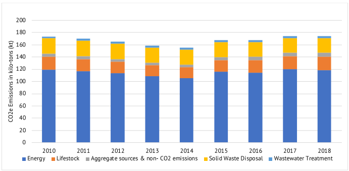
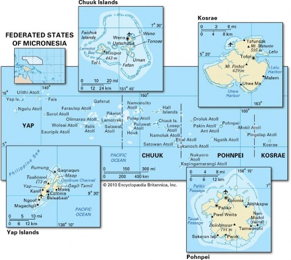
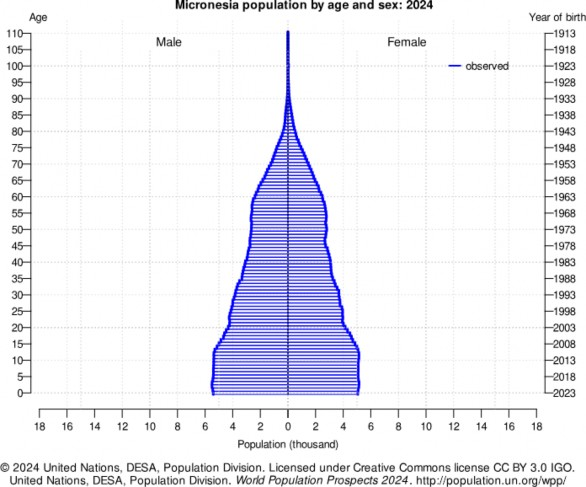
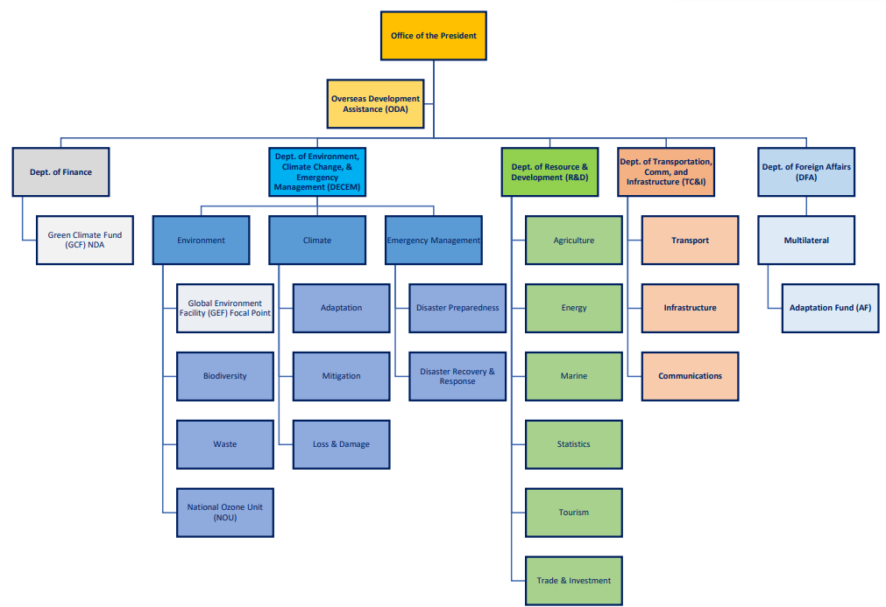
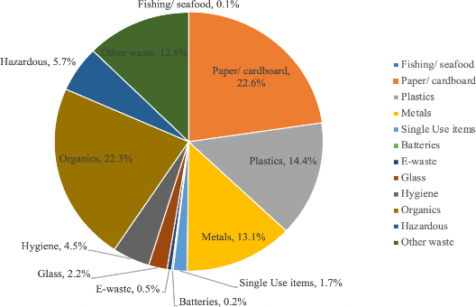
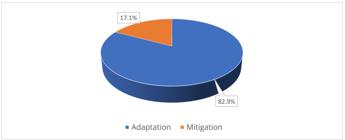
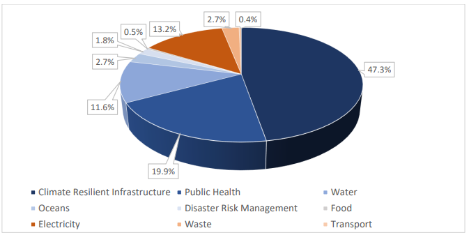

The Federated States of Micronesia
Nationally Determined Contribution 3.0
September 2025
Photo Credit: National Geographic
Abbreviations and Acronym
ADB Asian Development Bank
AFOLU Agriculture, Forestry and Other Land Use
ARISE Access and Renewable Increase for Sustainable Energy BBNJ Biodiversity Beyond National Jurisdiction Treaty
BESS Battery Energy Storage System
BUR Biennial Update Report
CDL Container Deposit Legislation
CFCSP Climate Finance Capacity Support Programme COFA Compact of Free Association
COM-FSM College of Micronesia
COP Conference of the Parties (to the UNFCCC) CROP Council of Regional Organisations in the Pacific
DECEM Department of Environment, Climate Change and Emergency Management DRE Distributed Renewable Energy
DTC&I Department of Transport, Communication & Infrastructure EEZ Exclusive Economic Zone
ENSO El Niño–Southern Oscillation
EPA Environmental Protection Agency ESWG Energy Sector Working Group ETWG Energy Technical Working Group EU
European Union
EV Electric Vehicle
FADs Fish Aggregating Devices
FESRIP Framework for Energy Security and Resilience in the Pacific FSM Federated States of Micronesia
FSM.SE Federated States of Micronesia Sustainable Energy Project GEDSI Gender Equality, Disability, and Social
Inclusion
GEF Global Environment Facility
GHG Greenhouse Gas
GIS Geographic Information System
GCF Green Climate Fund
HFCs Hydrofluorocarbons
IDPs Infrastructure Development Plans
IPCC Intergovernmental Panel on Climate Change IPPU Industrial Processes and Product Use
IUU Illegal, Unreported, and Unregulated (fishing) JICA Japan International Cooperation Agency LNOB Leaving No One
Behind
MoU Memorandum of Understanding
MEPS Minimum Energy Performance Standards
MPSBEE Micronesia Public Sector Buildings Energy Efficiency Project MRV Monitoring, Reporting, and Verification
MSPs Marine Spatial Plans
NBSAP National Biodiversity Strategy and Action Plan
NDA National Designated Authority (for GCF) NDC Nationally Determined Contribution NEP National Energy Policy
NISSAP National Invasive Species Strategy & Action Plan PA Protected Area
PANPF Protected Areas Network Policy Framework PET Polyethylene Terephthalate (plastic bottles) PMO Project
Management Office
PMU Program Management Unit
PP Public-Private (context: PPP, if used later)
PPA Pacific Power Association
PIFS Pacific Islands Forum Secretariat
PROPER Pacific Regional Oceanscape Program Economic Recovery/Resilience PT Public Transportation
PUC Pohnpei Utilities Corporation
PUF Plant Utilization Factor
REDP Renewable Energy Development Project
RPNDC Regional Pacific Nationally Determined Contribution R&D Resources and Development
SDG Sustainable Development Goal
SDP Strategic Development Plan
SEDAP Sustainable Energy Development and Access Project SLCPs Short-Lived Climate Pollutants
SMART Specific, Measurable, Achievable, Relevant, Time-bound SPC Pacific Community (Secretariat of the Pacific
Community) SPREP Secretariat of the Pacific Regional Environment Programme TTPI Trust Territory of the Pacific
Islands
T&D Transmission and Distribution
UNDP United Nations Development Programme
UNFCCC United Nations Framework Convention on Climate Change USAID United States Agency for International
Development
USP University of the South Pacific
VMS Vessel Monitoring System
1. FOREWORD
2. ACKNOWLEDGMENTS
The Government of the Federated States of Micronesia (FSM) extends its sincere appreciation to all parties who
contributed to the successful development of its updated Nationally Determined Contribution (NDC 3.0).
This national effort was led by the Department of Environment, Climate Change & Emergency Management
(DECEM) under the guidance of Secretary Honorable Andrew R. Yatilman. We gratefully acknowledge the invaluable
cooperation of our national and state-level stakeholders throughout the extensive consultation process.
We extend profound gratitude to the Governments of Australia, New Zealand, Germany, the United Kingdom, and
the European Union, whose funding through the Regional Pacific NDC Hub made this work possible. We also thank
the Pacific Community (SPC) team (Mr Ron Simpson, Dr Noim Uddin, Ms Sadie Tunaulu and Mr Amit Singh) for their
steadfast guidance and support.
Finally, special appreciation is extended to pManifold Business Solutions Ltd. for their dedicated technical
contributions.
The Government of FSM acknowledges the collective effort that culminated in this critical national document.
3. EXECUTIVE SUMMARY
The Federated States of Micronesia (FSM) submits its “Third Nationally Determined Contribution (NDC 3.0)”
under the Paris Agreement, reaffirming its commitment to the 1.5°C global goal and its national vision of
reaching net-zero emissions by 2050. Building on earlier submissions, this NDC expands sectoral coverage,
strengthens mitigation and adaptation measures and mentions loss and damage as a cross-cutting national
priority.
FSM’s NDC 3.0 reflects its longstanding record of climate leadership. The country was among the earliest to
ratify the Kigali Amendment, the first to sign the Biodiversity Beyond National Jurisdiction Treaty, and is a
founding member of the Global Methane Pledge. Domestically, this NDC is aligned with national and state
strategies such as the National Energy Policy 2024–2050, the Strategic Development Plan 2025–2034, and state-
level Smart Plans, ensuring coherence.
Mitigation Pathway:
FSM’s mitigation strategy prioritizes the Electricity, Transport, Waste, AFOLU (agriculture, forestry, and
other land use), and IPPU (Industrial Processes and Product Use) sectors. In 2018, emissions from electricity,
transport, and solid waste stood at approximately 170 ktCO₂e. Without intervention, these are projected to
rise to 222 ktCO₂e by 2030 and to 231 ktCO₂e by 2035, representing a growth of 31% and 35%.
With the implementation of identified measures, however, FSM can bend this baseline trajectory, reducing
emissions to 153 ktCO₂e in 2030 and 150 ktCO₂e in 2035, while avoiding ~69 ktCO₂e in 2030 and ~82 ktCO₂e in
2035 compared to the Business-as-Usual scenario. Key mitigation measures include:
Achieving 70% renewable electricity by 2030, and 80% by 2035
Ensuring universal electricity access and clean cooking adoption by 2035;
Transitioning towards electric vehicles; and
-
Advancing low-emission practices across waste, AFOLU and IPPU sectors

Figure 1: FSM’s Total GHG Emissions by Sectors
Adaptation and Resilience:
Adaptation remains equally central to FSM’s climate strategy. The NDC 3.0 outlines measures to:
Strengthen food and water security;
Restore mangroves and coastal ecosystems;
Expand Marine Protected Areas;
Conserve 30% of terrestrial ecosystems; and 50% of marine resources by 2035;
Climate-proof critical infrastructure, including roads, ports, and airports; and
-
Address growing public health risks from vector-, water-, and food-borne diseases.
All adaptation measures are designed with gender equality, disability, and social inclusion (GEDSI) at
their core, ensuring that vulnerable groups are protected and empowered in the transition. Recognizing the
irreversible impacts already being felt, loss and damage are now fully embedded as a national priority.
Means of Implementation:
Delivering these targets are conditional to sustained international support in the form of climate
finance, technology transfer, and capacity enhancement. FSM will operationalize its NDC 3.0 through its
Infrastructure Development Plans (2025–2034), state-level Smart Plans, and partnerships with bilateral,
multilateral, and regional initiatives and funding, including the Green Climate Fund.
FSM’s NDC 3.0 demonstrates both urgency and ambition. While the country’s emissions are negligible on a
global scale, it is taking bold actions to transform its energy systems, safeguard its people and
ecosystems, and chart a resilient, sustainable future. At the same time, FSM calls for stronger global
solidarity to ensure that the people of Micronesia and all Small Island Developing States can survive and
thrive in the face of a rapidly changing climate.
4. NATIONAL CIRCUMSTANCES
The Federated States of Micronesia (FSM) is an independent sovereign island nation composed of four states -
Yap, Chuuk, Pohnpei, and Kosrae – stretching across the western Pacific Ocean. The country comprises
approximately 607 islands with 702 sq. km, dispersed across an Exclusive Economic Zone (EEZ). FSM lies about
2,700 km north of eastern Australia1 and is among the world’s most geographically dispersed nations.
FSM has a rich history of human settlement dating back around 4,000 years. Over the centuries, the
islands came under successive colonial administrations: Spain in the 16th century, German in the late
19th century, and Japan in 1914. Following World War II, FSM became part of the United Nations Trust
Territory of the Pacific Islands (TTPI), under U.S. Administration. On May 10, 1979, the districts of Yap, Chuuk, Pohnpei, and Pohnpei’s then sub island,
Kosrae, ratified a constitution, establishing the Federated States of Micronesia. FSM achieved
independence in 1986 under the Compact of Free Association (COFA) with the United States, which was
amended in 2004 and renewed in 2024, ensuring long-term economic assistance for 20 years.
Each state maintains its own distinct culture, language, and traditions, while sharing common values
rooted in extended family and clan systems. FSM recognizes eight major indigenous languages, with
English serving as the official language of government and commerce.
Traditional knowledge – in farming, fishing, medicine, navigation, and sustainable use of forests,
reefs, and oceans – remains central to community life. However, challenges persist, including
declining intergenerational transmission, misappropriation, and inequitable benefit-sharing
. Strengthening the protection, revival, and integration of traditional knowledge with modern practices
is essential for sustainable resource management and climate resilience.
FSM’s geography is diverse, ranging from high volcanic islands to low-lying atolls:
Yap: Volcanic islands and 134 atolls.
Chuuk: Most populous state, with over 290 islands.
Pohnpei: Home to FSM’s largest islands and the national capital, Palikir.
-
Kosrae: A single high volcanic island, notable for its rivers and absence of outer islands.
This geographic diversity underpins FSM’s cultural richness but also heightens its exposure to
climate risks, particularly for low-lying atolls and coastal communities.

Figure 2: FSM Map
Climate Context
FSM, situated near the equator in the western Pacific, experiences a tropical maritime climate with
consistently high temperatures (26.5°C–27°C) and extreme humidity. Rainfall is the highest globally,
ranging from ~3,100 mm in Yap to over 5,150 mm in Kosrae, and even higher levels in mountainous
regions. Seasonal variability is shaped by the Intertropical Convergence Zone (ITCZ), trade winds, and
monsoon activity, with a wet season from May to November and a drier season from December to April.
The El Niño–Southern Oscillation (ENSO) strongly influences rainfall, with El Niño events bringing drought and La
Niña events causing heavy rains, floods, and landslides, particularly in vulnerable islands such as
Yap.
Observed Climate Change Trends
Air Temperature: The number of hot days has increased while cool nights have decreased across FSM.
Though the surface air temperatures have warmed less than the global average, these temperatures have
increased by ~1.6°F (0.9°C) in western FSM, covering all of Yap and the western islands of Chuuk, and
by ~1.4°F (0.8°C) in eastern FSM including Kosrae, Pohnpei, and the eastern islands of Chuuk.
Rainfall: Historical records since 1960 show variability, with declining wet season in rainfall
without a statistically significant long-term trend. Annual and wet season rainfall has declined in
Pohnpei (May to October) contributing to more frequent droughts since the 1950s.
Sea Surface Temperature: Average sea surface temperatures across FSM have increased by 0.45°F (0.25°C)
per decade since 1982, driving coral reef bleaching. Ocean Chemistry: Increasing acidification threatens
reef growth and marine biodiversity.
Sea Level: Sea-level is rising rapidly, with 19 cm increase near Pohnpei over the past 30 years, one-third of which occurred in the last 25 years.
Cyclones: FSM lies in the world’s most active tropical cyclone basin, with storms causing severe damage
to infrastructure, crops, and freshwater systems.
Projected Climate Change Risks
Rising Air Temperatures: Projected increase of ~1.3°F (0.7°C) by 2030 (relative to 1986– 2005 levels)
with 1.5°C global warming and up to 3.4°F (1.9°C), depending on global warming scenarios.
Extreme Rainfalls: Up to 12% increase by 2030 and 23% by 2090, raising flood and landslide risks.
Warm Sea Surface Temperature: Annual bleaching project by 2040, under high-warming scenarios
Ocean Acidification: Expected to severely limit reef growth by century’s end.
Rising Sea-Level: Projected 20cm rise by 2050 and 74 cm by 2100 under a 3.0°C warming scenario, amplifying risks of saline intrusion, wave-driven flooding, cyclone and tsunami-induced storms, and
coastal erosion. Further, wave heights are projected to decrease between December and March, while
during June to September they may become more predominantly directed from the south.
Increased Intensity of Cyclones: Fewer in number but more intense, with stronger winds and heavier
rainfall.
Overall Vulnerability
FSM’s vulnerability is shaped by its geography, reliance on natural resources, and dispersed population.
Low-lying atolls face existential threats from sea-level rise, saline water intrusion, and storm surges,
while shifts in rainfall and warming temperatures undermine water security, food production, and public
health. Coral reef degradation further erodes coastal protection and fisheries. Collectively, these
factors place FSM among the world’s most climate-vulnerable nations.
FSM’s population in 2024 is estimated at 113,160
, with a sex ratio of 1,013 females per 1,000 males and a density of 161 people per km². Figure 2
indicates the gender disaggregated data in FSM for all age groups with a declining trend in population
as the age increases for both males and females. Gender dynamics are shifting, with women increasingly
engaged in natural resource management, agriculture, forestry, and fisheries, contributing to food
security and resilience. Women are also well represented in managerial roles, though leadership
positions remain male-dominated.
The population is projected to decline slightly to 128,000 by 2054, peak at 133,000 around 2075, and
stabilize near 128,000. Urbanization remains modest at 23% (2023).

Figure 3: FSM Population by Age and Sex, 2024
Climate Change-related Impact
FSM faces intensifying climate-driven risks that exacerbate social vulnerabilities and may lead to
increased population mobility and relocation. Coastal and atoll communities, many situated just 1–2
meters above sea level, are particularly exposed to sea-level rise, drought, coastal erosion, and
intensified storms.
Climate shocks are already eroding household assets, threatening food security, and undermining
livelihoods from farming and fishing. These pressures heighten poverty risks and may disrupt cultural
practices closely tied to land and marine resources. Over time, such vulnerabilities are expected to
drive greater climate-related mobility and relocation, with FSM already recording net out-migration of
1,104 in 2024.
For women, climate change adds another layer of vulnerability. Women working in institutions often face
limited resources, weak gender mainstreaming, and competing cultural norms. Strengthening women’s
participation in climate governance is therefore essential to building resilience. At the same time,
expanding women’s roles in agriculture, forestry, and fisheries can enhance food security and strengthen
the benefits derived from subsistence livelihoods.
National and State Governance
FSM is governed under the Declaration of Rights and Constitution, which provides for three branches of
government at the national level:
Executive, led by the President and Cabinet;
Legislature is vested in the Congress; and
-
Judiciary is independent of the other branches.
The Constitution also recognizes the importance of integrating traditional political systems into
modern governance. Each of the four states has its own constitution and operates through executive,
legislative, and judicial branches. State governments oversee governance of land (except in the
national capital, Palikir), coastal resources up to 12 nautical miles, health, education, water, and
roads.
A unique feature exists in Yap, where traditional leaders form a fourth branch of government. Land
tenure varies across states with Yap and Chuuk having large areas of land and marine systems under
private ownership by families and clans.
The national government retains authority over offshore marine resources (beyond 12 nautical miles),
foreign affairs, immigration, and international treaty obligations. This creates a multi-layered
governance system, where both national and state authorities share responsibility for addressing
climate change.
Climate Change Governance and Institutional Arrangements
Climate change governance is handled by the Department of Environment, Climate Change and Emergency
Management (DECEM), which oversees national climate change policy, environmental management, and
disaster risk response. DECEM also serves as the national focal point for the Vienna Convention on
Ozone Layer Protection, the Montreal Protocol, and the Global Environment Facility (GEF), and acts
as the executing entity for the Adaptation Fund, with the Secretariat of the Pacific Regional
Environment Programme (SPREP) as implementing agency.
Other key institutions include:
-
a. The Department of Foreign Affairs (DFA): Represents FSM in international negotiations and serves
as the focal point for multilateral climate agreements.
-
b. The Department of Finance and Administration (DoFA): Hosts the National Designated Authority
(NDA) for the Green Climate Fund (GCF), ensuring alignment of climate finance with national
priorities.
-
c. The Department of Resources and Development (DoRD): Works with DECEM and state governments to
promote climate-smart agriculture, sustainable fisheries, and renewable energy development.
-
d. The Department of Transportation, Communication and Infrastructure (DTC&I): Leads disaster
preparedness and long-term adaptation planning for climate resilience in transportation and
energy infrastructure.
This framework provides a strong foundation, enabling FSM to align financing with implementation in
ways that deliver maximum impact.

Figure 4: FSM Institutional Coordination
Land is a vital cultural and economic asset in FSM, governed primarily by customary clan and
family-based tenure systems. Constitutionally, only FSM citizens may own land, while non-citizens may
lease property for limited periods. Most land is owned either communally (especially lineage land in
Chuuk, Kosrae, and Yap) or by single households for agricultural purposes. Land rights are strongly
protected by both tradition and law making land tenure a critical factor in climate adaptation and relocation planning. Current land
ownership issues hinder overall infrastructure development in FSM, including tourism facilities and
solar power plant projects.
FSM’s economy is highly dependent on subsistence activities, government services, and external
financial assistance. Government spending is largely supported by U.S. grants under the Compact of
Free Association, remains a key driver of economic stability.
In 2023, FSM’s nominal GDP per capita was approximately USD 4,084, up from about USD 3,835 in 2022. The services sector drove much of the economy, accounting for around 69.2% of GDP, while agriculture, forestry, and fishing contributed about 23.3%, and industry roughly 5%. FSM’s GDP declined by 2.9% in 2022, largely due to COVID-19 related disruptions such as reduced
mobility, tourism, and supply chain issues but began to recover with growth of 0.5% in 2023 and 0.7%
in 2024. Inflation was 6.2% in 2023, mainly from external supply shocks and rising import costs.
COVID-19 had pronounced impacts throughout FSM, especially for outer islands, where access to goods,
services, and markets was constrained. Post-COVID recovery has been incremental, and climate change
compounds economic risk: severe weather, cyclones, and coastal impacts damage infrastructure, disrupt
agriculture and fisheries, and drive migration. The GDP per capita trend shows cautious improvement, but
maintaining and accelerating progress depends on aligning growth with resilient, low-emission development.
4.8.1 Fisheries
FSM’s EEZ of approximately 3 million km², supports one of the world’s most productive tuna
fisheries. The sector contributes over US$70 million annually in licensing and direct
harvesting revenues, out of a total sector value of US$330 million. More than 150,000 tonnes
of tuna are harvested annually, with foreign fleet accounting for over 70% of the sector’s
economic value.
Fisheries are central to both export earnings and domestic food security, sustaining the
livelihoods of over 70% of households. However, climate change poses severe threats:
4.8.2 Tourism
Tourism plays a modest but meaningful role in FSM’s economy. In 2019, the sector generated US $18
million in revenues and directly employed about 2.5% of the workforce. Visitor arrivals 18,019, with 60%
to Pohnpei, 28% of visitors arrived in Chuuk, and 6% each to Kosrae, and Yap.
After several years of decline (2017 and 2019), arrivals have rebounded. For example, Yap recorded 1,825 international stayover visitors between January-August
2024, nearly double the 945 visitors in 2023, a 93% increase.
FSM’s rich cultural heritage and natural beauty present significant potential for tourism growth across
its states, including Yap, Chuuk, Pohnpei and Kosrae. However, weak environmental regulations pose risks
to sustainable tourism development. Although each state has established Environmental Protection Acts,
their effectiveness varies, and currently, none of the states has a building code. This regulatory gap
raises concerns, especially given both rising urbanization and the development of new tourism
infrastructure. Furthermore, the lack of regulations governing tourist access to fragile historical sites increases the risk of damage as visitors’ numbers rise.
The tourism sector is increasingly vulnerable to climate change. Rising sea levels, worsening storms,
coral bleaching, and coastal erosion threaten key attractions and infrastructure that are vital for
tourism. FSM’s Third National Communication to the UNFCCC highlights that these climate related threats
could severely impact tourism assets, such as beaches, reefs, and cultural sites, ultimately undermining
the economic benefits derived from tourism-related activities. Compounding these challenges are water
supply shortages, inadequate sanitation, and persistent waste management issues, which further constrain
FSM’s ability to expand tourism sustainably. Therefore, transitioning the tourism sector toward
energy-efficient systems and renewable technologies is a critical step in advancing the decarbonization
of the industry across all four FSM States.
FSM has established a robust institutional and policy framework to address climate change, disaster risk
reduction, energy transition, gender equality, and sustainable development. As a party to major
international agreements, including the UNFCCC, Kyoto Protocol, Montreal Protocol, and the Paris
Agreement – FSM is committed to ambitious climate action. Its Updated Nationally Determined Contribution
(NDC) for 2022 aims to reduce CO₂ emissions by 65% below 2000 levels by 2040, ensure 100% energy access by 2030, achieve 70% renewable
energy (85% by 2040), and attain net zero status by 2050.
To operationalize these goals, FSM has enacted several key policies and laws:
-
National Energy Policy 2024–2050: Led by the Department of Resources and Development’s Energy &
Water Division, this policy outlines ambitious targets, including achieving 70% renewable
electricity by 2030 and progressing to 100% by 2050. It emphasizes phasing out inefficient
biomass-based cooking, expanding clean electric transport, and ensuring universal energy access. The
policy, endorsed in August 2024 and formally launched in May 2025, is implemented nationally by the
Division of Energy, which facilitates coordination and manages standards and projects. State
utilities (PUC, CPUC, YSPSC, and KUA) execute delivery.
-
Energy Master Plans (2018): These state-level frameworks, developed under the Energy Sector
Development Project, offer 20-year roadmaps for infrastructure investment, renewable energy
expansion, women’s empowerment, and health outcomes. The plans inform NDC targets and have led to
the implementation of donor- funded solar PV systems and energy efficiency projects.
-
Strategic Development Plan (SDP) 2024-2043: Coordinated by the Department of R&D, this
overarching framework outlines priorities for economic growth, infrastructure, climate resilience,
and social development, aligning national objectives with global commitments.
-
Infrastructure Development Plans (IDPs): Endorsed by FSM Congress in January 2025, the IDPs set out
a coordinated, multi-sector investment pipeline for the next decade, covering energy, transport,
water, waste, health, and resilient infrastructure. Their objective is to guide resource allocation,
prioritize climate-resilient and sustainable projects, and attract external financing. The IDPs
serve as a bridge between sectoral development priorities and FSM’s climate commitments, directly
informing the design and implementation of NDC 3.0 by aligning infrastructure investments with
mitigation and adaptation goals.
-
National Disaster Management Plan (2025): This framework enhances disaster preparedness and response
across all governance levels. It emphasizes community self-sufficiency and the integration of
disaster risk management into national and state policies.
-
State SMART Plans: The State SMART Plans align state-level priorities with national development
strategies and NDC commitments, facilitating targeted resource mobilization. Developed through
multi-stakeholder workshops in 2025, these plans played a pivotal role in shaping NDC 3.0 by
translating state-level aspirations into concrete mitigation and adaptation targets. This bottom-up
process ensured that the NDC reflects both national ambition and local realities, strengthening
ownership and implementation pathways across all four states.
-
Solid Waste Management Strategy (2019): Building on prior national and regional efforts, this
strategy aims to establish a sustainable framework for integrated solid waste management over ten
years. It includes mid-term action plans and is primarily state-driven, supported by DECEM and
development partners.
-
National Gender Policy (2018): This policy promotes gender equality and mainstreams gender
considerations into climate and development processes. Its objectives include enhancing women's
leadership and participation, combating gender-based violence, and ensuring equitable education
outcomes. A five-year updated policy, the FSM National Gender Equality Policy (2025–2030), is set to
launch in October 2025.
-
Climate Change Act (2013): This foundational legislation mandates the integration of climate actions
across government ministries. Its implementation is led by DECEM, although challenges remain due to
limited institutional capacity and fragmented funding.
FSM’s NDC 2.0 established ambitious mitigation and adaptation targets across multiple sectors. Key commitments
included achieving 100% electricity access, increasing the share of renewable generation to over 70%, and
reducing CO₂ emissions from power by more than 65% below 2000 levels. Additionally, FSM pledged to phase down
HFCs, reduce black carbon and methane emissions from diesel generation by 65%, and develop national methane
inventories. On adaptation, FSM committed to climate-proof all major roads, ports, and airport access routes
by 2030, ensuring universal access to safe drinking water, and improving food security through initiatives
like farmer cooperatives, climate- smart agriculture, and seed banks. The NDC also targeted effective
management of 50% of marine resources and 30% of terrestrial areas, alongside strengthening public health
systems and disaster preparedness to better respond to climate-related risks.
The NDC 3.0 builds on the foundation of FSM’s NDC 2.0 by expanding coverage to new sectors including
transport, waste, cooking, oceans, and loss and damage. It strengthens coherence with national development
plans (SDP and IDPs) and biennial update reports, regional frameworks, and global climate architecture.
A key feature of NDC 3.0 is its alignment with the outcomes of COP28 and COP29, particularly through its link
to the Global Stock-take (GST) process and the recognition of a just and equitable transition as guiding
principles. The GST calls for parties to amplify ambition in light of collective progress towards the Paris
Agreement goals and FSM responds by extending updated targets to 2035, providing a longer-term planning
horizon that better reflects infrastructure cycles, adaptation needs, and investment strategies. In the
mitigation sector, NDC 3.0 builds on FSM’s energy transition package, reaffirming the target of 70% renewable
energy in power generation by 2030. Additionally, it sets post-2030 milestones on grid modernization and
efficiency improvements. On the adaptation front, NDC 3.0 integrates priorities on coastal protection,
resilient infrastructure, and food and water supplies. Importantly, the NDC 3.0 explicitly incorporates loss and damage as a cross-cutting area, acknowledging FSM’s extreme vulnerability
to sea-level rise, typhoons, and other climate shocks. By mainstreaming enabling factors such as gender and
disability inclusion, education and capacity building, policy and regulation, climate financing, and private
sector participation, FSM positions its NDC 3.0 as a comprehensive framework through 2035, balancing
mitigation and adaptation efforts while addressing critical resilience needs.
Reflecting the COP28 outcome on just-transition, FSM emphasizes that the fair and inclusive implementation of
NDC 3.0 is inseparable from safeguarding livelihoods, addressing socio-economic vulnerabilities, and ensuring
that no community is left behind. The people of FSM are collectively building and strengthening the country’s
resilience to climate change in alignment with the just-transition principles.
Looking ahead to COP29, FSM underscores that delivery of enhanced international climate finance through the
new collective quantified goal (NCQM) will be critical to realizing the conditional elements of its NDC 3.0.
The measures outlined in NDC 3.0 have been prepared at the national level through extensive
consultations and validations involving both national and state stakeholders. These measures reflect
state-level priorities, articulated through their respective SMART plans, ensuring alignment with
sector-specific strategies while accommodating the varying levels of development among the four states.
The preparation process involved a structured review of existing literature and frameworks. Key national
and state-level frameworks analyzed include the Strategic Development Plan (SDP) 2024-2043 and the
National Energy Policy (2024–2050), which provide the overarching direction., This is complemented by
the Energy Master Plans (2018), Solid Waste Management Strategy (2019), National Disaster Management
Plan (2025), and the Climate Change Act (2014). The Infrastructure Development Plans (IDPs) 2025–2034
translate priorities into actionable investment pipelines, while cross-cutting initiatives are supported
by the National Gender Policy (2018), with a new Gender Equality Policy (2025–2030) set to be launched
soon. Together, these policies and plans establish the foundation for FSM’s inclusive climate ambition
and ensure alignment with regional and global frameworks.
FSM currently relies on diverse methodologies provided by multilateral agencies and technical assistance
programs to measure and report on climate-related activities, including waste emissions, GHG inventories, and
climate finance flows. While these efforts have been valuable, they have often produced fragmented data that
is inconsistent and difficult to compare across sectors.
In preparing NDC 3.0, FSM has identified gaps, particularly in GHG inventories, due to the absence of a
consistent data source. To address these challenges, FSM recognizes the need for a nationally owned
Monitoring, Reporting, and Verification (MRV) framework that consolidates data across mitigation, adaptation,
and finance sectors. Establishing such a system will ensure country ownership, enhance consistency in data
collection and reporting, and align with national climate priorities. A unified MRV framework will also
strengthen FSM’s capacity to report transparently under the Enhanced Transparency Framework, improve access to
international climate finance, and support evidence-based policymaking.
FSM’s mitigation strategy under NDC 3.0 targets the primary sources of national emissions by prioritizing
actions in the electricity, transport, waste, agriculture, forestry and other land use (AFOLU), and industrial
processes and product use (IPPU) sectors. Collectively, these sectors account for the majority of the
country’s GHG emissions, with energy use in electricity generation and transport being the largest
contributors.
The energy sector is central to FSM’s sustainable development, economic resilience, and climate
objectives. Access to reliable, affordable, and clean energy is essential for improving livelihoods,
ensuring service accessibility, and reducing dependence on imported fossil fuels, which currently pose
significant economic and environmental challenges. Moreover, energy accounts for the largest share of
GHG emissions in FSM, making it a priority focus area for mitigation. Within the energy sector, two
subsectors are particularly critical: Electricity and Transport.
5.1.1 Electricity
The electricity sector is the largest source of GHG emissions in FSM, primarily due to the country’s
reliance on imported petroleum fuels for power generation. Annual spending on diesel imports amounts
to around US$50 million, constituting about ~15% of GDP and creating both climate and economic
vulnerabilities. Diesel is responsible for almost 80% of FSM’s CO₂ emissions, underscoring the urgent need for a transition to sustainable alternatives.
FSM possesses useful renewable energy potential, particularly solar, wind, and hydro resources.
However, the deployment of these resources has been constrained by high upfront costs and limited
grid infrastructure and capacity. The inclusion of electricity in this NDC underscores its critical
role in mitigation, its potential to strengthen energy security and resilience, and its alignment
with FSM’s long-term net-zero vision.
As of 2024, electricity generation in FSM continues to be dominated by diesel-powered generators,
which provided about 31 MW of installed capacity. Renewable sources accounted for 17% of total
capacity, with solar providing 4.65 MW, wind 0.84 MW and hydro 0.72 MW. These renewable systems serve mostly the main islands with the exception of mini grids in Yap
state’s outer islands. Although there has been gradual progress in the development of solar PV
systems, the expansion of energy storage has not consistently matched this growth.
FSM’s grid infrastructure remains independent of the main island grid, with each state— Yap, Chuuk,
Pohnpei, and Kosrae operating standalone, small-scale networks. This structure restricts economies
of scale and complicates renewable energy integration. Electrification rates vary considerably:
while national household access reached 97% in 2024, Chuuk stood at 42.8% (only 2 out of the 40
islands are currently electrified) compared to 96–97% in Pohnpei and Kosrae and 85% in Yap31.
Expansion of grid connectivity remains a priority, with Chuuk targeting universal access by 2035.
Energy efficiency also remains an area of opportunity. Plant Utilization Factors (PUF) for diesel
generators vary a lot with 56% in Pohnpei, 15% in Yap, 23% in Chuuk and 30% in Kosrae in 2024,
reflecting underuse and the high operating costs of small-scale systems. Currently, there is an
energy efficiency policy only in Yap under the Yap Building Code, 1997 but DoRD is working on a
National Energy Efficiency Policy and Minimum Energy Performance Standards. DoRD envisages to have
this policy endorsed in early 2026. The targeted efforts under the Micronesia Public Sector
Buildings Energy Efficiency (MPSBEE) Project (2021) have introduced energy conservation and
efficiency practices in public facilities.
MEASURES
Table 1: Mitigation Priority Area – Electricity
# |
Measures |
Conditionality |
SDG Goals |
M1 |
Increase Renewable energy mix in electricity generation at grid level to 70% by 2030 and 80%
by
2035
|
Conditional |
|
M2 |
Increase electricity access to 100% by 2035 |
Conditional |
M3 |
Improve energy efficiency across supply and demand systems:
-
M3.1: Develop and enforce MEPS for commonly used electrical equipment and appliances (Ex. ACs,
Fans, Lighting, Motors, others)
M3.2: Reduce T&D losses to below 10% by 2030 and below 8% by 2035 -
M3.3: Improve energy efficiency (EE) in commercial facilities like water and wastewater handling
facilities
M3.4: Increase awareness on EE and drive financing innovations and support for increased adoption across stakeholders
|
Conditional |
M4 |
Increase Distributed Renewable Energy (DRE) production and use to:
M4.1: Households and communities in main and outer islands M4.2: Water and Waste-Water Utilities M4.3: On-shore port electrification and auxiliary supply to ships
|
Conditional |
FSM’s planned measures in the electricity sector can deliver transformative outcomes. By raising the
renewable energy share to 70% by 2030 and 80% by 2035, while simultaneously reducing transmission
losses and enhancing energy efficiency, the country can significantly diminish reliance on diesel
generation. This plan includes expanding renewable capacity to about 54 MW, most of which would be
solar, by 2035, which is in line with the Energy Master Plan. Implementing these actions can avoid
the use of more than ~18 million gallons of diesel for electricity generation between 2026– 2030 and
a further ~28 million gallons between 2031–2035. Collectively, these measures could result in a
reduction of approximately 208 ktCO₂ from 2026 to 2030, representing a 66% reduction compared to
Business-as-Usual in 2030, and about 324 ktCO₂ from 2031 to 2035, or roughly a 76% reduction
compared to Business-as-Usual in 2035. Reducing the use of diesel fuel or improving fuel efficiency
also contributes to lowering emissions of black carbon, a short-lived climate pollutant with
significant climate and health impacts. Achieving these outcomes will require sustained
international support, increased climate finance, and access to the necessary technologies and
capacity.
The energy sector is guided by the National Energy Policy 2024–2050, Energy Master Plan 2018, and
state-level SMART plans. Current donor-supported projects include the ADB’s Renewable Energy
Development Project (REDP), Clean Energy Project, and Climate Resilience Energy and Water Sector
(CREWS) Project; World Bank’s Access and Renewable Increase for Sustainable Energy (ARISE) and
Sustainable Energy Development and Access Project (SEDAP) projects, the EU-funded FSM Sustainable
Energy Project (FSM.SE), and some state-level SMART plan. These existing initiatives aimed at
advancing renewable penetration, expanding access, and modernizing FSM’s power sector will require a
lot more investments for meeting NDC 3.0 electricity measures. The adoption of renewable energy and
energy efficiency programs can also enhance FSM’s tourism sector, reducing reliance on diesel,
lowering operational costs for resorts and services, and promoting the image of FSM as a sustainable
and eco-friendly destination.
5.1.2 Transport
Transport is essential to FSM’s mobility, trade, and connectivity, linking communities across a
widely dispersed island geography. The sector supports economic activity through road, sea, and air
transport; however, it also significantly contributes to national fuel demand and associated
emissions, as it relies on imported petroleum products. Recognizing its importance, transport
related mitigation is included in NDC 3.0 for the first time, ensuring that mobility and
connectivity needs are addressed in tandem with climate commitment.
FSM has a road network of 388 km, of which 185 km are paved, and 203 km are unpaved. As of 2020,
there were approximately 11,014 registered vehicles, predominantly private and second-hand
imports. The vehicle fleet is generally older and fuel-intensive and there are currently no national standards for fuels, fuel efficiency and vehicle inspections.
Marine transport is vital for inter-island mobility and trade, with 38 cargo ships over 1,000 gross
tons operating within FSM. The main ports are Colonia (Yap), Lele Harbor (Chuuk), Moen Harbor
(Pohnpei), and Pohnpei Harbor that handle both cargo and passenger traffic. Air transport is equally
important with international airports in Chuuk, Pohnpei, Kosrae, and Yap providing essential links
to the region and beyond.
At present, the transport sector is entirely dependent on imported petroleum fuels, with no adoption
of electric vehicles (EVs) or alternative fuels. Since about 85% of FSM’s electricity generation
still comes from diesel, the electrification31 of transport will only reduce emissions effectively
if is accompanied by an expansion of renewable energy generation. Consequently, planning for EV
adoption is closely linked to FSM’s renewable energy pathway.
Developing a comprehensive transport strategy is recognized as a priority, with opportunities
identified in improving public transport systems, expanding walking and cycling infrastructure, and
transitioning to cleaner fuels such as biofuels, which can leverage local biomass resources. These
approaches can strengthen connectivity while reducing reliance on imported fossil fuels and
improving community well-being.
MEASURES
Table 2: Mitigation Priority Area – Transport
# |
Measures |
Conditionality |
SDG Goals |
M5 |
Develop National Master Transport Plan and associated State Action Plans, integrating land and marine transportation. |
Conditional |
|
M6 |
Improve NMT (walkway, bicycling lanes) to allow a more livable urban community |
Conditional |
M7 |
Increase the shift to Public Transportation (PT) buses and ferries |
Conditional |
M8 |
Transition to electric and clean fuel alternatives for land, sea, and air transportation, including increasing the share of e-Mobility |
Conditional |
Note: The sequence of measures follows the Avoid, Shift, Improve approach
In the transport sector, road vehicles and domestic marine vessels are estimated to consume around 51.6 million gallons of fossil fuels between 2026 and 2030, rising to 56.7 million
gallons between 2031 and 2035. Under a Business-as-Usual (BaU) trajectory, this consumption equates
to approximately 500 ktCO₂e between 2026–2030 and 550 ktCO₂e in 2031–2035.
The electrification of road and domestic marine transport can begin to reduce these emissions.
Without a concurrent shift to renewable energy in the power sector, electrification alone risks
shifting emissions from tailpipes to upstream electricity generation. However, when coupled with
FSM’s planned renewable energy transition, the introduction of electric vehicles can deliver greater
long-term benefits by reducing fossil fuel imports, improving air quality, and cutting emissions in
line with FSM’s net-zero vision.
Transforming FSM’s transport sector offers opportunities not only for emissions reduction but also
for improving mobility and connectivity across the islands. The measures in this NDC focus on
creating more accessible and affordable transport systems, reducing dependence on private vehicles,
and ensuring that all communities, urban and outer islands alike, benefit from reliable connections.
5.1.3 Energy - Others
Access to clean, safe, and affordable cooking solutions is an important component of FSM’s energy
transition with direct implications for public health, gender equality, and emission reduction.
Traditional cooking practices in many households rely on biomass or kerosene, contributing to indoor
air pollution and disproportionately affecting women and children, particularly in outer islands.
Including clean cooking in FSM’s NDC ensures that energy access goals are linked to health and
social outcomes while reducing reliance on imported fossil fuels.
Clean cooking access remains limited in FSM, especially in rural and outer island communities, where
households rely on firewood and kerosene as cooking fuels. The 2016 Agriculture Census confirmed
widespread use of biomass for household needs, often without efficient stoves. Although LPG/butane
stoves are increasingly used in urban centers, their uptake in outer islands is hindered by
affordability, supply chain constraints, and lack of awareness.
MEASURES
Table 3: Mitigation Priority Area – Energy - Others (Cooking)
# |
Measures |
Conditionality |
SDG Goals |
|
M9
|
Increase clean cooking adoption using biogas, electric stove, and other clean options to 70%
by 2035
|
Conditional
|
|
Expanding access to clean cooking can deliver triple benefits: improved health by reducing household
air pollution, gender empowerment through women’s engagement in the clean energy value chain, and
climate mitigation by reducing reliance on kerosene and inefficient biomass. The measures outlined
are fully aligned with the National Energy Policy 2024–2050 and contribute to FSM’s broader SDG
commitments, particularly SDG 7 (universal energy access). However, there is no national program yet
that ensures universal adoption and achieving 100% access to clean cooking by 2035 will require
scaled-up investment, stronger supply chains, and targeted gender-sensitive programming.
The waste sector is increasingly prioritized in FSM’s climate agenda due to its contribution to national
greenhouse gas emissions, primarily methane from unmanaged landfills and nitrous oxide from wastewater.
In 2018, the sector generated 27.24 ktons of CO₂e. making it one of the key non-energy sources of emissions. FSM’s dispersed island geography and
reliance on imported goods, particularly plastics and packaging, have amplified the volume and
complexity of waste streams. Limited landfill space, alongside challenges in collection and treatment,
creates significant risks for public health, coastal ecosystems, and marine biodiversity.
FSM’s waste infrastructure remains small in scale, with each state operating a single landfill of
varying sizes. Pohnpei’s Dekehtik landfill, is the largest at 4 hectares, handles approximately 7,000
tons of waste annually. In contrast, the landfills in Yap (0.83 ha), Chuuk (0.5 ha), and Kosrae (0.6
ha) are much smaller. Collectively, these landfills manage around 13,000 tons of waste each year. Waste collection practices vary by state: Pohnpei and Chuuk employ a combination of municipal
collection and direct transport, while Yap and Kosrae report much lower collection volumes due to
limited capacity. Rehabilitation of Chuuk’s landfill is currently underway, as the old landfill is full
and contains a significant amount of mixed waste that was dumped without proper sorting practices.
In practice, waste streams are dominated by organics and plastics, with organics contributing
significantly to landfill methane emissions. However, the fraction of organic waste is relatively small
compared to other developing countries with similar economic level because of this feeding habit.
Biowaste is often fed to piggeries, while composting practice are scarce and primarily limited to the
household level. Progress has been made through initiatives such as the Plastic Ban Policy, which has
been enforced in several states, and the long-standing Container Deposit Legislation (CDL) scheme that
incentivizes recycling of aluminum cans, PET bottles, and glass. However, the aluminum recycling
facility in Chuuk is currently facing issue due to not getting consistent power supply.

Figure 5: Municipal Solid Waste Composition by Weight (2021)
MEASURES
Table 4: Mitigation Priority Area – Waste
# |
Measures |
Conditionality |
SDG Goals |
M10 |
Develop policy on circular economy with a particular focus on waste reduction:
-
M10.1: Enhance the implementation of policy and regulation on banning Single Use Plastic by 2030
-
M10.2: Develop metal bailing and compacting facilities for scrap cars, fuel canisters, aluminum
cans, and others for forward recycling
M10.3: Install new incinerators to better handle bio-hazardous and medical waste
|
Conditional |
|
M11 |
Improve landfill site management and divert organic waste from landfill sites and controlled landfill site management
M11.1: Promote composting practices at household level M11.2: Develop community composting and mulching facilities across all states M11.3: Improve operational and monitoring capacity for the semi-aerobic
|
Conditional |
M12 |
Improve municipal solid waste and waste-water collection and treatment systems for reduced
Methane release
M12.1: Conduct a pilot of a decentralized wastewater treatment systems. -
M12.2: Promote anaerobic biodigesters for households and piggeries by involving private sector to
treat wastewater and produce biogas for clean cooking (and electricity generation)
|
Conditional |
|
With the identified measures fully resourced, FSM can achieve a methane reduction target of 12% below
2020 levels. This translates to an avoidance of approximately 30 ktCO₂e between 2026–2030 and an
additional 47 ktCO₂e between 2031-2035. This will be achieved by reducing waste generation by 10% and
improving the landfill site operation and monitoring. Once more accurate data is collected from
wastewater sector, the reduction is estimated to be larger.
By improving waste management, FSM can reduce emissions while enhancing community resilience, ocean
health, and the transition toward a circular economy. Strengthening waste management through new
landfills, recycling programs, proper operation and monitoring and composting systems will reduce
pollution and greenhouse gas emissions while creating multiple social and economic benefits. Improved
waste handling enhances public health by lowering disease risks, protects marine ecosystems vital for
fisheries and tourism, and generates jobs in recycling and composting sectors. Composting and mulching
in particular supports food security by improving soil fertility and reducing dependence on imported
fertilizers, linking waste management directly to sustainable agriculture and livelihoods.
The IDPs (2025–2034) and Methane Reduction Roadmap (2025) include projects for improved solid waste
management systems, including expanded collection, landfill upgrades with proper operation, recycling,
and organic waste management through composting and mulching which reduce pollution, climate impact and
enhance public health outcomes.
The AFOLU sector is pivotal to FSM’s climate strategy. While agriculture and small-scale livestock
contribute only modest emissions, FSM's extensive forests, agroforests, and especially mangrove
ecosystems serve as critical carbon sinks. This sector is essential for food security, biodiversity
conservation, and community resilience. Given ongoing pressures from deforestation, invasive species,
and climate impacts such as saltwater intrusion and storms, including the AFOLU sector in NDC 3.0
supports both mitigation and adaptation goals through an integrated, ecosystem-based approach.
Based on the 2016 Integrated Agriculture Census, over 90% of households in FSM reported access to land
for agriculture purposes, with 74% cultivating solely for household consumption, focusing on root
crops like taro, yam, breadfruit, bananas, and coconut. Tree crops and agroforestry dominate land use,
comprising up to 80% of agricultural landscapes.
Forests cover a substantial portion of FSM, with mangrove forests spanning approximately 94 km² across
all four states. Pohnpei contains around 57 km², followed by Kosrae (14 km²), Chuuk (12 km²), and Yap
(11 km²). Mangroves not only serve as carbon sinks but also protect shorelines, stabilize sediments,
and function as essential fish nurseries, thereby supporting both ecosystem health and coastal
resilience.
Livestock ownership is widespread, with approximately 61% of households owning livestock as of 2016,
amounting to 29,900 pigs and 70,800 chickens30. These livestock contribute to methane and nitrous oxide
emissions through enteric fermentation and manure management. While fertilizer use is minimal,
traditional shifting cultivation and organic matter decomposition also contribute to small-scale nitrous
oxide releases.
MEASURES
Table 5: Mitigation Priority Area – AFOLU
# |
Measures |
Conditionality |
SDG Goals |
M13 |
Develop Integrated Land Management Plan and associated State Action Plans |
Conditional |
|
M14 |
Increase forest conservation and restoration to increase the forest cover |
Conditional |
M15 |
Reduce methane release from agriculture through enhanced livestock productivity and utilization
of organic fertilizers made from composting
|
Conditional |
|
These measures align with the FSM Agriculture Policy Framework (2021–2030), the Nationwide Integrated
Disaster Risk Management and Climate Change Policy, and state- level resource management and
agroforestry programs. FSM has established several policy frameworks and projects to guide the
development and conservation of the AFOLU sector. These include the National Biodiversity Strategy and
Action Plan (NBSAP 2018– 2023), the National Agriculture Policy (2012–2016, with follow-up programming),
and the FSM Forestry Policy.
Ongoing projects supported by partners such as Secretariat of the Pacific Regional Environment Programme
(SPREP), Food and Agriculture Organization of the United Nations (FAO), and the Micronesia Conservation
Trust (MCT) focus on sustainable agriculture, mangrove restoration, and invasive species management.
Projects identified in the IDPs (2025-2034) also encompass projects aligned with these measures
including agroforestry, aquaculture, coastal protection, and agricultural facilities. These efforts aim
to strengthen food systems while restoring ecosystems and carbon sinks.
In addition to CO₂ and methane emissions, FSM faces challenges from short-lived climate pollutants (SLCPs)
such as black carbon and hydrofluorocarbons (HFCs), as well as air and marine pollution stemming from plastics
and hazardous waste. These pollutants not only contribute to near-term climate warming but also adversely
affect human health, food security, and marine ecosystems – key components of FSM’s livelihoods. Addressing
these issues through integrated pollution control policies strengthens FSM’s climate action while delivering
co-benefits for communities and the environment.
MEASURES
Table 6: Mitigation Priority Area – IPPU
|
#
|
Measures
|
Conditionality
|
SDG Goals
|
|
M16
|
Reduced HFCs use and leakages by aligning with the Kigali Amendment and attaining a 10% reduction in
HFCs by 2029 and 30% reduction by 2035
|
Conditional
|
|
FSM has limited industrial processes but relies on imported refrigerants, particularly hydrofluorocarbons
(HFCs), for refrigeration and air conditioning in households, fisheries, and commercial facilities. While
overall volumes are small, HFCs are potent greenhouse gases and a growing source of emissions. As a party to
the Kigali Amendment to the Montreal Protocol, FSM is committed to phasing down HFC consumption in line with
international obligations. Currently, data on HFC use are primarily gathered from customs and Ozone
Secretariat’s reporting. Enhanced monitoring and enforcement measures are needed to establish a robust
national baseline and facilitate the transition to alternatives with lower global warming potential.
While the IDPs for 2025-2034 focus less on industrial processes, they note the importance of phasing down
high-global warming potential refrigerants in alignment with the Kigali Amendment and establishing systems to
manage future industrial emissions effectively.
6. ADAPTATION
FSM faces significant risks from sea-level rise, saltwater intrusion into freshwater lenses, increased
intensity of tropical storms, coastal erosion, and shifts in rainfall patterns. These challenges directly
threaten livelihoods, food security, freshwater availability, health, and critical infrastructure. To
effectively address these interconnected risks across food security, water, oceans and biodiversity, public
health, climate-resilient infrastructure, and disaster risk management, FSM requires integrated adaptation
approaches.
Although FSM has adopted ecosystem-based adaptation policies, limited financing – meeting only 25% of
identified needs – and insufficient technical capacity hinder their implementation. This NDC 3.0 emphasizes measures designed to strengthen local food systems, secure water supplies, protect
marine and terrestrial biodiversity, and ensure that infrastructure can withstand climate shocks, all while
integrating diverse state-level measures into a coherent national framework.
Subsistence farming and fishing are primary sources of food in FSM. Key crops include taro, breadfruit,
yam, banana, and coconuts, while coastal and offshore fisheries provide essential protein. Although
coconut palms are no longer the dominant cash crop, they remain resilient due to their versatile uses
for food, oil, fuel, and handicrafts. Livestock such as pigs and poultry are raised at household level.
Despite these resources, food security has deteriorated over the past few decades as local agricultural
production per capita has declined. Productivity is hampered by pests and poor soil conditions, and
traditional seed stocks are at risk. Additionally, coconut production has fallen due to aging trees and
diminished farmer interest, while aquaculture remains underdeveloped due to limited technical knowledge,
inputs, and finance. Fragmented islands complicate market access, and inadequate storage and processing
facilities weaken the link between producers and buyers.
FSM’s heavy reliance on exacerbates vulnerability to global supply disruptions and rising costs. In
2023, the country imported over US$13 million worth of poultry meat, processed fish, and other meat products, which also contributes to increased
maritime shipping emissions. Climate-induced extremes have further compounded food security issue, with
prolonged droughts in Pohnpei and Kosrae and typhoons in Chuuk and Yap, repeatedly devastated crops and
water supplies. Destructive fishing practices undermine marine resources.
MEASURES
Table 7: Adaptation Priority Area – Food
# |
Measures |
Conditionality |
SDG Goals |
A1 |
Protect land & water to reduce saltwater intrusion, erosion, and flood risk: |
Unconditional |


|
A2 |
Adopt climate-resilient farming to improve crop tolerance to heat, storms, and pests:
|
Unconditional |
A3 |
Secure seed & livestock resources to ensure rapid recovery after climate shocks: |
Conditional |
A4 |
Enhance water security to sustain farming during droughts and dry spells: |
Conditional |
A5 |
Scale sustainable aquaculture while preserving reefs by operating hatchery-based aquaculture for
clams, sandfish, and other species
|
Conditional |
A6 |
Strengthen food value chains to produce more (for local consumption and exports), minimize post-
harvest loss, grow market linkages, and increase
farmer income
|
Conditional |
A7 |
Enable monitoring systems, policies, finance, and capacity building to unlock climate-smart
agriculture investment by enhancing farmers' cooperatives
|
Conditional |
A8 |
Prevent and manage invasive species (IS) to protect
croplands
|
Conditional |
A1.1: Construct coastal barriers using bunds, walls, or mangrove plantations
A1.2: Restore watershed areas for the protection of freshwater lenses
A2.1: Diversify crops with climate-resilient varieties and using agroforestry systems
A2.2: Apply mulching and organic soil amendments
A2.3: Develop integrated pest and disease management practices
A3.1: Establish community nurseries
A3.2: Operate decentralized seed banks
A3.3: Develop and manage broodstock for livestock
The measures outlined in this NDC 3.0 aim to collectively strengthen FSM’s food security by protecting
the natural resource base and increasing the resilience of farming systems. Coastal barriers, watershed
restoration, and invasive species management will mitigate
saltwater intrusion, erosion, and biodiversity loss, thereby preserving arable land and freshwater for
agriculture. Climate-resilient farming practices, crop diversification, and soil management are expected
to enhance yields and reduce vulnerability to storms, heat, and pests. Community nurseries,
decentralized seed banks, and livestock broodstock will ensure that farmers can quickly recover
production after disasters. Rainwater harvesting and micro-reservoirs provide critical buffers against
drought, while hatchery-based aquaculture offers alternative protein sources without overexploiting
marine reefs.
The NDC 3.0 sets ambitious goals to increase FSM’s food resilience and has some ongoing projects
aligned with the measures However, financing remains limited with a 50% decline in donor funding, and
support systems for farmers are still weak. The FSM Strategic Development Plan 2024-2043 emphasises the need for increased resource availability
and capacity development for aquaculture and small-scale fisheries, as well as community workshops and
trainings in agriculture and fishing.
The National Biodiversity Strategy & Action Plan (NBSAP) and the FSM Agriculture Policy (2012–2016)
emphasize on creating and maintaining state seed banks and collaborating with farmers’ associations to
enhance market access. To strengthen land and water protection, FSM is leveraging the PACMAN mangrove
monitoring network and the FSM Forest Action Plan 2020–2030 for watershed restoration, nursery support,
and mangrove resilience. The National Invasive Species Strategy & Action Plan (NISSAP) provides
guidance on biosecurity, and ongoing invasive species programs have already yielded positive outcomes
for FSM, particularly in Chuuk.
FSM relies on rainwater, surface water, and ground water for freshwater supply. The low- lying islands
depend almost entirely on rainwater and shallow wells, as public water supplies are non-existent and
groundwater from water lenses are unsuitable for drinking. In contrast, the high islands access aquifers
and deeper wells. While desalination is not routinely used, it serves as an emergency measure for outer
islands during droughts. Water distribution utilities across FSM operates independently, with limited
oversight by the state Environmental Protection Agencies (EPA). Some older communities lack distribution
lines, while newer homes are typically connected to these systems.
-
Yap promotes private rainwater tanks for households without access to alternative sources of water
and provides them with free water quality testing kits. Most communities have implemented measures
to protect watersheds. In 2023–
2024, Yap expanded its dam and surface-water capacity and has access to drinking water from wells.
Kosrae conducts water testing in catchment areas to ensure water quality.
-
In Chuuk, Weno Island is the only island with access to drinking water supplied by Chuuk Public
Utility Corporation, serving approximately 8% of households.
-
The Pohnpei Utilities Corporation has a much broader reach, servicing 96% of the population with
drinking water.
Water security in FSM is likely to become an increasingly difficult challenge in the context of
climate change. This includes risks from flooding and marine inundation, saltwater intrusion into
freshwater lenses, and El Niño-related droughts affecting area like Yap and western Chuuk. Human
pressures such as over-pumping of groundwater leading to salinization, contamination from inadequate
sanitation systems in rural areas, poor managed catchment and storage facilities, proximity of
piggeries to water sources, industrial demand from fish processing in Pohnpei, and unsustainable
agricultural practices further strain resources. Limited technical capacity and data gaps hinder
effective planning, underscoring the need for climate-smart infrastructure, including stronger
watershed management, scaled wastewater treatment, and the development of additional groundwater and
surface-water sources.
MEASURES
Table 8: Adaptation Priority Area – Water
# |
Measures |
Conditionality |
SDG Goals |
A9 |
Increase clean drinking water access to 100% by 2035 |
-
A9.1: Repair, maintain and expand water distribution system for unserved and underserved
communities
-
A9.2: Install water purification systems in underserved areas (including solar- powered water
purification systems for dispensaries)
Conditional |
|
A10 |
Improve management and protection of watersheds |
-
A10.1: Conserve and protect different water sources (increase monitoring, strengthen
regulations, and improve education and public awareness)
A10.2: Install community/ household rainwater harvesting systems
Conditional |
A11 |
Add new fresh ground and surface water sources |
Conditional |
|
A12 |
Repair, maintain and expand waste-water treatment systems |
Conditional |
The above-mentioned measures aim to significantly strengthen FSM’s water security by expanding
reliable access, protecting freshwater sources, and ensuring safe management of wastewater.
Repairing and extending distribution systems will help achieve universal access to clean drinking
water, while improved watershed protection will preserve freshwater lenses and reduce contamination
risks. Rainwater harvesting systems will create additional buffers during droughts and developing
new freshwater sources will diversify supply, reducing dependence on vulnerable single systems.
Upgrading wastewater treatment safeguards public health and ecosystems, preventing pollution of
scarce freshwater resources and coastal areas. Together, these interventions build a resilient and
inclusive water sector in FSM.
The FSM SDP (2024-2043) prioritizes improvements to rural community water systems through water
catchment system upgrades and efficient use of water lenses. Additionally, FSM’s state-specific
SMART plans on water security focus on refurbishing and extending existing networks like in Chuuk’s
outer islands, while improving water quality and infrastructure through assessments and mapping in
Pohnpei and Yap. These actions align with the overarching goal of providing universal access to
clean drinking water by upgrading infrastructure and expanding service to underserved communities,
adding new freshwater sources; and repairing and expanding waste-water treatment systems.
FSM is a globally significant biodiversity hotspot, boasting a high species richness with 1,239 plant
species across its marine and terrestrial ecosystems. Biodiversity underpins FSM’s culture, livelihoods, climate resilience, and food security. Currently, over 30% of marine areas
and 20% of terrestrial ecosystems in FSM are under formal protection.
The country maintains over 50 protected sites with current coverage at approximately 6.4% of marine and
14.6% of terrestrial ecosystems. Forests are particularly critical for conservation and restoration
efforts. Under Forest Conservation and Restoration initiative, FSM’s forests, including the unique Yela
Valley Ka Forest, contribute to watershed health, climate resilience, and habitat for endemic
biodiversity. Main threats to FSM’s terrestrial biodiversity include habitat conversion and
unsustainable land use practices, limited resources and technical capacity for ecosystem management, and
climate change impacts such as storms and changing rainfall patterns.
MEASURES
Table 9: Adaptation Priority Area – Biodiversity
# |
Measures |
Conditionality |
SDG Goals |
A13 |
Protect and restore mangroves and coastal vegetation to provide natural coastal defense
|
Unconditional |
|
A14 |
Conserve terrestrial forests and wetlands by managing 30% terrestrial resources by 2035
|
Unconditional |
A15 |
Expand and manage protected areas (PAs) to conserve key species and habitats
A15.1: Assess, update and register PAs (leveraging GIS maps) A15.2: Undertake enforcement and community outreach programs |
Conditional |
A16 |
Promote sustainable land use and ecosystem-based adaptation by developing/updating Integrated
Land Management Plans and Shoreline Development Plans
|
Conditional |
The measures proposed in this NDC 3.0 aim to deliver significant positive outcomes for FSM’s
biodiversity and land resilience by integrating ecosystem protection with sustainable land management
practices. Restoring mangroves and coastal vegetation will strengthen natural coastal defenses, reduce
erosion, storm surge damage, and saltwater intrusion while sustaining nearshore fisheries. Expanding and
effectively managing protected areas will ensure the conservation of key species and ecosystems,
promoting local stewardship.
The commitment to effectively manage 30% of terrestrial resources by 2035 aligns with the Micronesia
Challenge. At the state level, Kosrae’s SMART Plan recognizes that achieving this goal requires clear
measurement and monitoring systems, highlighting the need to develop mechanisms to evaluate terrestrial
resource management. This goal also aligns with the National Biodiversity Strategy and Action Plan
(NBSAP). Complementing this is the FSM Forest Action Plan (2020–2030) that outlines strategic actions on
forest management and biodiversity protection in upland and terrestrial areas. Land-based measures are
further supported by integrated planning efforts, such as Kosrae’s KLUP land allocation and zoning plan
and Mutunlik Shoreline Coastal Protection Plan, as well as the national-level “Securing
Climate-Resilient Sustainable Land Management and progress towards Land Degradation Neutrality (LDN)
The Protected Areas Network Policy Framework (PANPF) strengthens terrestrial biodiversity management by
coordinating terrestrial sites both at the national and state levels. State-specific actions include
Kosrae’s use of geographic information systems (GIS) to update protected area maps and develop
management plans and community engagement activities across states to elevate awareness of terrestrial
conservation. The importance of mangroves as carbon reservoirs has been recognized in the Paris
Agreement, prompting FSM states to enact laws and regulations aimed at the protection and conservation
of mangroves over time.
6.4 Ocean
The ocean constitutes more than 99.9% of FSM’s territory and represents the country’s most valuable
economic resource. FSM has the 14th largest Exclusive Economic Zone (EEZ) globally with a total ocean area of approximately 3 million
square kilometers despite its small landmass. Marine Protected Areas (MPA) have expanded to cover 28% of FSM’s EEZ. The region’s coral reefs are home to a rich diversity of marine life, including 1,221 fish species
and 472 corals species, which are vital for ecosystem health and livelihoods of local communities. However, there are persistent gaps with marine data and a concerning decline in
coral reef health.
Key threats to ocean ecosystems include overexploitation of coastal and nearshore fisheries, illegal,
unreported, and unregulated (IUU) fishing of tuna stocks, and the use of conventional fishing gears and
unsustainable fishing practices. Climate change poses critical challenges, particularly through ocean
warming, sea-level rise, and acidification. In response to these threats, climate change adaptation has
become a key pillar of FSM’s integrated ocean management strategy.
MEASURES
Table 10: Adaptation Priority Area – Ocean
# |
Measures |
Conditionality |
SDG Goals |
A17 |
Manage tuna and high-seas resources to sustain national revenue and ocean health by
incorporating:
-
A17.1: 100% of purse seine vessels in FSM EEZ using non-entangling, biodegradable FADs by 2035
A17.2: 100% of FSM-flagged longline vessels covered by electronic monitoring by 2035
|
Conditional |
|
A18 |
Restore, manage and protect more than 50% of coastal marine habitats like coral reefs to sustain
nearshore fisheries by 2035
A18.1: Establish coral reef monitoring and restoration programs A18.2: Integrate reef resilience strategies into coastal management A18.3: Implement community-based management for reef areas -
A18.4: Restore degraded seagrass beds and coastal wetlands through replanting and community programs
A18.5: Expand monitoring of seagrass and wetland health to track carbon sequestration
|
Conditional |
A19 |
Strengthen sustainable management of 50% marine resources and restrict commercial fishing in 30%
of marine areas by 2035
|
Conditional |
A20 |
Develop blue economy activities to diversify ocean-derived income through:
|
Conditional |
A21 |
Strengthen marine governance, surveillance & data systems in 30% of marine waters by 2035:
A21.1: Expand VMS/monitoring and community-based surveillance A22.2: Improve national ocean data systems and mapping A22.3: Develop Marine Spatial Plans (MSPs) at state and national levels -
A22.4: Build capacity for enforcement and monitoring in partnership with BPM and Micronesia
Challenge
|
Conditional |
|
A22 |
Protect and monitor marine ecosystems from acidification by establishing long-term ocean
acidification monitoring stations and piloting adaptive strategies
|
Conditional |
A23 |
Strengthen coastal protection by regulating beach sediment removal
-
A23.1: Establish national and state-level regulations controlling sand, gravel, and coral aggregate
removal from beaches and nearshore areas
A23.2: Conduct monitoring and enforcement programs to prevent illegal and unsustainable extraction
|
Conditional |
A24 |
Reduce ocean pollution & support healthy marine ecosystems
-
A24.1: Reduce plastic leakage into the ocean by 100% by 2035 through nationwide enforcement of
single-use plastics bans and circular economy systems
A24.2: Control land-based pollution and runoff into nearshore waters A24.3: Enforce sustainable disposal of ship wastes and fuels
|
Conditional |
The proposed measures aim to significantly enhance ocean health, ensure the sustainability of fisheries,
and bolster climate resilience while securing long-term economic benefits through diversification of
livelihoods and reduction in reliance on imports. Restoring and protecting over 50% of coastal
ecosystems such as reefs, seagrass, and wetlands will sustain nearshore fisheries. Expanding marine
protected areas and restricting commercial fishing will help conserve critical habitats and replenish
stocks. Strengthening marine governance, spatial planning, and surveillance will ensure sustainable use,
while monitoring ocean acidification and regulating sediment removal will protect coastal ecosystems from long-term degradation. Additionally, eliminating plastic pollution
and controlling land- and ship-based pollution will contribute to healthier marine ecosystems.
The commitment to effectively manage 50% of marine resources by 2035 aligns with the Micronesia
Challenge. Supporting this initiative, the Pacific Regional Oceanscape Program
– Economic Recovery/Resilience (PROPER) is now in its second phase, focusing on state- level policies
for community-based fisheries, reducing destructive practices, and advancing ecosystem-based management.
The Blue Prosperity Micronesia (BPM) program, launched in 2019, aims to protect 30% of FSM’s marine
waters (approximately897,000 km²). All four states have signed Memorandum of Understanding (MoUs) to
support BPM, committing them to activities such as Marine Spatial Planning to ensure sustainable and
inclusive use of FSM’s extensive ocean resources. Furthermore, FSM is receiving support from the Global
Ocean Acidification Observing Network (GOA- ON) and NOAA Ocean Acidification Program (NOAA OAP) to
reduce ocean acidification, alongside initiatives at the national and state levels to ban single-use
plastic and promote circular economic practices.
The measures for oceanic resource management and developing blue economy activities are considered as
key development priorities under the SDP (2024-2043). In support of these priorities, College of
Micronesia-FSM (COM-FSM) plans to launch new climate- focused courses in marine science and blue
economy. The Electronic Monitoring (EM) Program of FSM, backed by the Nature Conservancy’s Tuna
Transparency Technology (T- 3) Challenge, the Forum Fisheries Agency (FFA), and Secretariat of the
Pacific Community (SPC), has advanced fisheries governance, ensuring transparency in tuna fisheries
within the FSM EEZ. FSM has also developed a Management Plan for Fish Aggregating Devices (FADs) and led
regional efforts to adopt non-entangling FADs. Marine protection efforts are supported by the Protected
Areas Network Policy Framework (PANPF), which covers marine sites alongside terrestrial areas. Chuuk has
committed to establishing new Marine Protected Areas (MPAs) with strong community engagement in outreach
and education.
The public healthcare system in FSM is primarily managed at the state level (Yap, Pohnpei, Chuuk,
Kosrae) through a three-tier structure: community dispensaries, state hospitals, and referrals to
hospitals abroad. Healthcare delivery is also supported through partnerships with affiliated entities such as US
military programs, as outlined in the Compact of Free Association (CFA) treaty. Urban areas are generally better equipped than rural/outer islands, leading to persistent issues in
service quality and access for rural communities. Key challenges in the healthcare system include
resource limitations and lack of funding, dependence on aid, inconsistent delivery across states,
limited surveillance infrastructure, shortage of skilled workers, and lack of specialized services.
Climate change is projected to negatively impact public health in FSM, increasing the prevalence of
vector-borne diseases (VBD, such as dengue fever, malaria, Zika, and Chikungunya virus, as well as
food borne disease (FBD), like Salmonella, E. coli, and Staphylococcus aureus, and waterborne diseases
(WBD), including diarrheal pathogens, gastroenteritis and leptospirosis. According to WHO data, the incidence of tuberculosis has also worsened since 2022. Extreme events such as typhoons and floods exacerbate outbreaks and emergencies, highlighting the
need for health systems in FSM, at both national and state levels, to adapt to the increased
environmental health burdens.
MEASURES
Table 11: Adaptation Priority Area – Public Health
# |
Measures |
Conditionality |
SDG Goals |
A25 |
Establish a laboratory and surveillance system to detect and monitor VBD, WBD, and FBD, to
enable rapid response and control of outbreaks
|
Conditional |
|
A26 |
Provide medical personnel and public health officials with training in the detection and
treatment of VBD, WBD, and FBD
|
Conditional |
A27 |
Equip hospitals and other relevant medical facilities to receive and effectively treat patients
suffering from VBD, WBD, and FBD
|
Conditional |
The proposed measures aim to strengthen FSM’s public health resilience by improving early detection,
preparedness, and treatment capacity for VBD, WBD, and FBD. Establishing a laboratory and surveillance
system will enable real-time monitoring, rapid response, and control of outbreaks, thereby reducing
the risk of widespread transmission. Training medical personnel and public health officials will
enhance diagnostic accuracy, case management, and community-level awareness, ensuring timely
interventions. Equipping hospitals and facilities with the necessary tools and resources will improve
patient care and outcomes. Overall, FSM’s health system is witnessing a positive change through
telemedicine, mobile outreach, and community-led care. Remote islands are now being covered under
initiatives like “Health on the Move”.
Measures A25, A26, and A27 emphasize the availability of diagnostic services, capacity building for
staff at all levels of the healthcare system, and the equipping of medical facilities, aligning with the
strategic priorities of the FSM SDP (2024-2043). At the state level, Kosrae and Pohnpei plan to
establish laboratories by 2030 to detect and monitor VBD/WBD/FBD, equip facilities and run periodic
trainings with Pacific Island Health Officers Association (PIHOA)/WHO through 2035. PIHOA has already
led a multi-agency vector-surveillance & outbreak-response training in Pohnpei (Nov 2024).
At the national level, FSM is implementing a project “SAP051: Increasing resilience to the health
risks of climate change in the Federated States of Micronesia” funded by GCF and executed by SPC to
strengthen climate-proof public health systems. The project will focus on improving early warning
interventions and help in establishing and improving the surveillance of climate-related FBD, WBD, and
VBD. The project will also focus on improving the health workforce and technical staff capacity to
monitor and respond to climate-sensitive diseases. FSM is also a part of the newly launched Pacific
Vector Network, under the Pacific Public Health Surveillance Network (PPHSN). PVN will help member
countries like FSM through digital tools for collecting and sharing vector surveillance data.
6.6 Climate Resilient Infrastructure
FSM faces significant vulnerability to climate change impacts due to its dispersed geography and
reliance on coastal infrastructure. Roads, ports and airports are vital for connectivity and trade, yet
are increasingly threatened by rising sea levels, storms, flooding and other extreme weather events.
Strengthening infrastructure resilience is thus central to FSM’s adaptation strategy, ensuring continued
mobility and economic activity.
The FSM road network faces various vulnerability issues, including: (i) coastal exposure to sea-level
rise, storm surges, and wave action during very high tides and typhoons; (ii) inland flooding and
landslides during extreme rainfall events and (iii) accelerated pavement deterioration caused by extreme
weather and rising water tables in some locations. For instance, in 2015, Typhoon Maysak wiped out 90
percent of key agricultural crops in Chuuk and Yap, affecting 29,000 people and causing US$8.5 million
in damages.
Moreover, as drought and sea level rise are exacerbated by regional El Niño-Southern Oscillation (ENSO)
processes, atoll communities increasingly rely on imported food and water during times of stress.
Extreme spring tides, amplified by se-level rise, lead to severe are marine inundation that damages
critical coastal infrastructure, particularly on low-lying atoll islets.
Investing in climate-resilient infrastructure can promote sustainable and equitable growth, representing
a significant adaptation opportunity for FSM. By climate-proofing all major island ring roads, arterial
roads, airport access roads, and major ports, and by upgrading docks to be larger, stronger, and
compliant with International Ship and Port Facility Security (ISPS) standards, FSM can protect l trade
flows, fisheries, and disaster response operations from climate-induced disruptions. The adoption and
enforcement of climate-resilient building codes and engineering standards across all new infrastructure
projects and key public utility systems will ensure that future investments account for sea-level rise,
stronger storms, and long-term climate risks.
MEASURES
Table 12: Adaptation Priority Area – Climate Resilient Infrastructure
# |
Measures |
Conditionality |
SDG Goals |
A28 |
Climate-proof land transport corridors, access routes and other essential
A28.1: Elevate road section A28.2: Improve drainage system A28.3: Reinforce embankments against erosion and sea-level rise |
Conditional |
|
A29 |
Enhance port and harbor resilience to maintain supply chains by climate proofing 100% of major
ports by 2035
-
A29.1: Extend docks and upgrade them to be larger, stronger, and compliant with International Ship
and Port Facility Security (ISPS) standards
-
A29.2: Increase availability and use of eco- friendly equipment and facility at the port side
|
Conditional |
A30 |
Strengthen airports and runways to maintain air connectivity |
Conditional |
A31 |
Climate-proof key public utility systems (electricity, water, wastewater, public transportation,
telecom, others) and new infrastructure through national building codes
|
Conditional |
Resilience is a cross-cutting theme in the IDPs (2025-2034), which include projects for coastal
protection, continuity planning, and upgrades to public facilities designed to withstand storms and sea
level rise. These initiatives align closely with NDC 3.0 measures and require significant investments for implementation. However, the SDP (2024–2043) estimates that FSM
needs over US$1.2 billion for infrastructure improvements by 2035, with current financing covering only
about 30% for this requirement. At the state-level, Kosrae has proposed an improvement plan for Okat
Port, which includes constructing a new terminal (AV3) construction, extending the runway (AV2),
enhancing navigation aids, and expanding the seaport to international standards (MA1–MA3). These
projects align with the SDP and the FSM Airport Master Plan.
Disaster Risk Management is both critical and difficult in a geographically dispersed SIDS such as FSM. The
communities face numerous possible threats exacerbated by climate change, including typhoons, landslides,
droughts, earthquakes, and sea level rise. These threats result in the loss of economic assets, damage to infrastructure, disruption of livelihoods,
and reduced food security. For example, the drought conditions that affected Pohnpei, Yap, and Chuuk in 2024
left nearly 21,000 people in urgent need of water and food assistance, prompting the government to declare a
national emergency. Although US$1.2 million was allocated to the Disaster Relief Fund, along with support
from UNICEF, the scale of need highlighted that far more assistance was required. According to the Voluntary National Review 2025, while over 40 municipalities have disaster preparedness
plans, implementation gaps remain, particularly in remote areas. Additionally, FSM faces significant risk of
oil spills in Chuuk Lagoon due to numerous World War II (WWII) shipwrecks, where effective recovery and safe
disposal of oil are critical concerns.
MEASURES
Table 13: Adaptation Priority Area – Disaster Risk Management
# |
Measures |
Conditionality |
SDG Goals |
A32 |
Enhance emergency preparedness through strong planning and appropriate resources buildup communities
|
Conditional
|
|
A33 |
Enhance emergency response through expediting inter-state transportation by securing additional rescue
vessels
|
Conditional
|
A34 |
Enhance response and recovery through provision of climate resilient warehouse and shelters
-
A34.1: Create capacity and warehouse(s) for pre-positioning of humanitarian supplies at National and State
levels
-
A34.2: Construct and retrofit multi-purpose emergency shelters to withstand climate extremes like typhoons
and floods
-
A34.3: Offer regular community training and drills on shelter use, management, and emergency preparedness
|
Conditional
|
|
A35 |
Upgrade vessels, equipment, and storages to better handle oil spills |
Conditional |
Note: The sequence of measures involves a value-chain approach with preparedness followed by response and then
recovery
The proposed measures will significantly improve FSM’s disaster preparedness, response, and recovery
capabilities. Developing nationwide and state-level GIS maps will enable identification of vulnerable
communities, guiding targeted planning and resource allocation. Expanding interstate transportation with
additional rescue vessels will strengthen mobility during emergencies; while establishing climate-resilient
warehouses designed to withstand typhoons and floods will protect lives and reduce disruption during crises.
Regular community training and drills will enhance local readiness and resilience. Upgrading vessels,
equipment, and storage facilities for managing oil spills will further safeguard marine and coastal
ecosystems, preventing compounding disaster risks. Together, these actions create a more robust,
community-centered disaster management system for FSM.
FSM has already updated its National Disaster Response plan in 2025, and Pohnpei plans to revisit and update
its own disaster plan in alignment with this national effort. To identify vulnerable communities and high-risk
areas, GIS tools such as PopGIS3, OpenStreetMap, and the Digital Atlas of Micronesia are already in use.
Pohnpei aims to launch a state GIS mapping initiative with national and regional partners to complete
comprehensive mapping by 2035. Investment in intra- and inter-state cargo and transportation vessels has been
identified as a key measure under disaster preparedness, enhancing emergency response capacity to deliver
vital supplies and to evacuate persons from disaster areas or those in need of medical assistance. To
strengthen emergency response and inter-state mobility, Pohnpei plans to upgrade and/or secure additional
vessels by 2035. Concurrently, the national-level SMART Plan targets construction of warehouses and
development of search and rescue plans across all the 4 states, providing the operational backbone for
preparedness, response, and recovery.
The ongoing projects include the “Disaster Risk Management Program” by VITAL and Potentially Polluting Wrecks
(PPW) initiative. The PPW project, funded by the Department of Foreign Affairs and Trade (DFAT) of Australia,
and supported by Japan Mine Action Service (JMAS) and Major Projects Foundation (MPF), aims to enhance
management in Chuuk Lagoon through technical information, on-site oil recovery, risk surveys of high-risk wrecks, and strengthened contingency training. FSM has also leveraged the Pacific Islands Regional Marine Spill Contingency Plan (PACPLAN) in formulating
its national plan and operationalizing oil-spill response. However, safe final disposal of recovered oil
remains a gap in FSM’s disaster management strategy.
7. LOSS AND DAMAGE
FSM is one of the most climate-vulnerable nations globally, facing both extreme events and slow-onset
processes that cause irreversible loss and damage. Intensifying typhoons, sea level rise, saltwater intrusion,
and coastal erosion threaten the very habitability of many islands. Damage to homes, schools, hospitals,
transport links, and community facilities has cascading impacts on health, education, food security, and
livelihoods. Consequently, addressing Loss and Damage is a critical pillar of FSM’s NDC, reflecting the
nation’s limited adaptive capacity and the pressing need for international support to address climate impacts
that exceed adaptation thresholds.
FSM already experiences frequent climate-induced disasters. Typhoon Maysak (2015) and Typhoon Wutip (2019)
caused widespread destruction of housing, crops, and infrastructure, with recovery costs far exceeding
national resources. More recently, Typhoons Bebinca (2024) and Kong Rey (2024) have underscored recovery gaps
in outer islands, particularly in housing and food systems. Sea level rise has inundated taro patches and
freshwater lenses in outer islands, while coastal erosion threatens the relocation of communities from
low-lying atolls. Non-economic losses, including damage to cultural heritage sites, community displacement,
and the erosion of traditional livelihoods, are becoming increasingly evident.
Currently, post-disaster response in FSM is largely financed through emergency aid and Compact support;
however, systematic mechanisms to quantify and redress loss and damage remain underdeveloped. Gaps remain in
compensation, insurance, and addressing non-economic losses, necessitating the establishment of a robust
monitoring framework, resilient infrastructure, and a comprehensive strategy at the national and state levels.
This will require dedicated international financing streams, including the Loss and Damage Fund under the
UNFCCC in addition to Compact and development partners. At COP28, Parties operationalized the Loss and Damage
Fund with the World Bank as interim trustee, establishing new channel for dedicated finance. COP29 built on
this progress by affirming arrangements for disbursement from 2025, with specific emphasis on equitable access
for Small Island Developing States. Recent international negotiations have advanced support for vulnerable
countries like FSM making timely and predictable access to these resources will be essential for strengthening
national efforts and contributing to a more resilient and sustainable future.
8. MEANS OF IMPLEMENTATION
Means of Implementation encompass the resource requirements and cross-cutting enabling factors such as
finance, capacity building, inclusivity, policy frameworks, and private sector participation, necessary to
deliver FSM’s NDC 3.0.
The following table summarises the measures proposed under NDC 3.0 for Mitigation and Adaptation
sectors. Achievement of majority of the measures is conditional i-e- it is contingent upon the
availability of international financing. Such financing is then directed towards conducting
pre-feasibility studies, building institutional and technical capacity, accessing appropriate
technologies, and enabling the policy frameworks required to implement the conditional targets.
Table 14: Measures – Mitigation & Adaptation
# |
Measures |
Conditionality |
M1 |
Increase Renewable energy mix in electricity generation at grid level to 70% by 2030 and 80% by
2035
|
Conditional |
M2 |
Increase electricity access to 100% by 2035 |
Conditional |
M3 |
Improve energy efficiency across supply and demand systems |
Conditional |
M4 |
Increase Distributed Renewable Energy (DRE) production and use |
Conditional |
M5 |
Develop National Master Transport Plan and associated State Action Plans integrating land and
marine transportation
|
Conditional |
M6 |
Improve NMT (walkway, bicycling lanes) to allow more livable urban community |
Conditional |
M7 |
Increase shift to Public Transportation (PT) buses and ferries |
Conditional |
M8 |
Transition to electric and clean fuel alternatives for land, sea, and air transportation
including increasing the share of e-Mobility
|
Conditional |
M9 |
Increase clean cooking adoption using biogas, electric stove, and other clean options to 70% by
2035
|
Conditional |
M10 |
Develop policy on circular economy with a particular focus on waste reduction |
Conditional |
M11 |
Improve landfill site management and divert organic waste from landfill sites |
Conditional |
M12 |
Improve municipal solid waste and waste-water collection and treatment systems for reduced
Methane release
|
Conditional |
M13 |
Develop Integrated Land Management Plan and associated State Action Plans |
Conditional |
M14 |
Increase forest conservation and restoration to increase the forest cover |
Conditional |
M15 |
Reduce methane release from agriculture through enhanced livestock productivity and utilization
of organic fertilizers made from composting
|
Conditional |
M16 |
Reduced HFCs use and leakages by aligning with the Kigali Amendment and attaining a 10%
reduction in HFCs by 2029 and 30% reduction by 2035
|
Conditional |
A1 |
Protect land & water to reduce saltwater intrusion, erosion, and flood risk |
Unconditional |
A2 |
Adopt climate-resilient farming to improve crop tolerance to heat, storms, and pests |
Unconditional |
A3 |
Secure seed & livestock resources to ensure rapid recovery after climate shocks |
Conditional |
A4 |
Enhance water security to sustain farming during droughts and dry spells |
Conditional |
A5 |
Scale sustainable aquaculture while preserving reefs by operating hatchery-based aquaculture for
clams, sandfish, and other species
|
Conditional |
A6 |
Strengthen food value chains to produce more (for local consumption and exports), minimize
post-harvest loss, grow market linkages, and increase farmer income
|
Conditional |
A7 |
Enable monitoring systems, policies, finance, and capacity building to unlock climate-smart
agriculture investment by enhancing farmers' cooperatives
|
Conditional |
A8 |
Prevent and manage invasive species (IS) to protect croplands |
Conditional |
A9 |
Increase clean drinking water access to 100% by 2035 |
Conditional |
A10 |
Improve management and protection of watersheds |
Conditional |
A11 |
Add new fresh ground and surface water sources |
Conditional |
A12 |
Repair, maintain and expand waste-water treatment systems |
Conditional |
A13 |
Protect and restore mangroves and coastal vegetation to provide natural coastal defense
|
Unconditional |
A14 |
Conserve terrestrial forests and wetlands by managing 30% terrestrial resources by 2035
|
Unconditional |
A15 |
Expand and manage protected areas (PAs) to conserve key species and habitats |
Conditional |
A16 |
Promote sustainable land use and ecosystem-based adaptation by developing/updating Integrated
Land Management Plans and Shoreline Development Plans
|
Conditional |
A17 |
Manage tuna and high-seas resources to sustain national revenue and ocean health |
Conditional |
A18 |
Restore, manage and protect more than 50% of coastal marine habitats like coral reefs to sustain
nearshore fisheries by 2035
|
Conditional |
A19 |
Strengthen sustainable management of 50% marine resources and restrict commercial fishing in 30%
of marine area by 2035
|
Conditional |
A20 |
Develop blue economy activities to diversify ocean-derived income |
Conditional |
A21 |
Strengthen marine governance, surveillance & data systems in 30% of marine waters by 2035
|
Conditional |
A22 |
Protect and monitor marine ecosystems from acidification by establishing long-term ocean
acidification monitoring stations and piloting adaptative strategies
|
Conditional |
A23 |
Strengthen coastal protection by regulating beach sediment removal |
Conditional |
A24 |
Reduce ocean pollution & support healthy marine ecosystems |
Conditional |
A25 |
Establish a laboratory and surveillance system to detect and monitor VBD, WBD, and FBD, to
enable rapid response and control of outbreaks
|
Conditional |
A26 |
Provide medical personnel and public health officials with training in the detection and
treatment of VBD, WBD, and FBD
|
Conditional |
A27 |
Equip hospitals and other relevant medical facilities to receive and effectively treat patients suffering from VBD, WBD, and FBD
|
Conditional |
A28 |
Climate-proof land transport corridors, access routes and other essential |
Conditional |
A29 |
Enhance port and harbour resilience to maintain supply chains by climate proofing 100% of major
ports by 2035
|
Conditional |
A30 |
Strengthen airports and runways to maintain air connectivity |
Conditional |
A31 |
Climate-proof key public utility systems (electricity, water, wastewater, public transportation,
telecom, others) and new infrastructure through national building codes
|
Conditional |
A32 |
Enhance emergency preparedness through strong planning and appropriate resources buildup
|
Conditional |
A33 |
Enhance emergency response through expediting inter-state transportation by securing additional
rescue vessels
|
Conditional |
A34 |
Enhance response and recovery through provision of climate resilient warehouse and shelters
|
Conditional |
A35 |
Upgrade vessels, equipment, and storages to better handle oil spills |
Conditional |
FSM’s geographic dispersion, limited domestic resources, and vulnerability to climate impacts pose
significant challenges for the implementation of its NDC. While the country has identified priority
projects, its ability to execute these actions is constrained by institutional, technical, and financial
capacity. Therefore, the implementation of FSM’s mitigation and adaptation measures remains conditional
on scaled-up international climate finance, which will be used for technology transfer, technical
assistance, policy enablement, and capacity development.
According to the National and State-level IDPs (2025-2034), several projects have been identified as
priority investments requiring resource allocation. The IDPs estimate that FSM will need an aggregate of
US$1,402.4 million for infrastructure development over the next 10 years. Adaptation accounts for the
larger share (US$1,162.4 million; 82.9%), driven by high‑value resilience packages in climate resilience
infrastructure, transport corridors, water and wastewater systems, and ports and airports, relative to
mitigation investments. Mitigation investment sectors including electricity, waste, and transport have
limited representation as of now. State-level requirements account for ~88.2% of the total funding with
'Climate Resilient Infrastructure' emerging as the single largest sectoral need (~US$643.7 million).
This underscores the areas where implementation efforts and financing will require the most
coordination.

Figure 6: Adaptation & Mitigation Fund Requirements as per National & State-level IDPs (2035)

Figure 7: Sectoral Fund Requirements as per National & State-level IDPs (2035)
The NDC measures listed under NDC 3.0 covering both mitigation and adaptation sectors is estimated to
require higher investments than envisaged by the IDPs till 2035. Mobilizing these investments, beyond
ongoing and budgeted commitments, through Compact allocations, development partners, and climate and
environment funds will be critical to advancing FSM’s NDC commitments. Achieving the targets set for
2030 and 2035 will also depend on investments in technology deployment, local entrepreneurship, and
regional supply chains, supported by concessional finance and grant mechanisms mobilized under NDC 3.0.
Key development partners and climate and environment funds identified for investments in the project
pipeline include the COFA, multilateral banks and agencies such as the Asian Development Bank (ADB),
World Bank, and US Agency for International Development (USAID); bilateral partners including
Australia’s Department of Foreign Affairs and Trade (DFAT), Japan International Cooperation Agency
(JICA), and the European Union (EU) and China; and international mechanisms such as the United Nations
Development Programme (UNDP) and the Green Climate Fund (GCF).
In addition to resources, FSM is working towards ensuring alignment of enablement factors within NDC
3.0. FSM aims to fully integrate Gender Equality, Disability, and Social Inclusion (GEDSI) principles
into NDC 3.0 through state-level SMART Plans. This integration guarantees that women, youth, persons
with disabilities, and marginalized groups are included in decision-making process, capacity-building,
and implementation processes. It also commits to advancing education and capacity building by embedding
climate curricula, vocational training, and community-based learning into national and state programs.
Institutions such as COM-FSM contribute through research, infrastructure development, capacity building,
extension services, and the expansion of online and hybrid programs to reduce inter-island travel and
emissions while promoting equity and resilience.
Furthermore, it aims to align NDC 3.0 with existing frameworks such as the Climate Change Act (2014),
the Strategic Development Plan (2024–2043), and the National Energy Policy (2024–2050). In parallel, FSM
intends to mobilize climate finance by linking state- level IDPs and Smart Plans with international
mechanisms such as the GCF and the Loss and Damage Fund. The country seeks to promote private sector
participation through incentives, concessional finance, and partnerships in renewable energy,
sustainable fisheries, resilient agriculture, eco-tourism, and circular economy initiatives.
FSM is a culturally diverse nation, where traditional structures significantly shape social life. In Chuuk,
Pohnpei, and Kosrae, matrilineal system prevails, with land passing through the mother’s clan, allowing women
to play active roles in land management and decision- making. Conversely, Yap and some outer islands in
Pohnpei follow patrilineal systems where land is inherited through the father’s lineage. Across the nation,
men and women maintain complementary responsibilities. While men typically engage in tree cultivation and work
as carpenters, builders, and fishers, women manage families, harvest crops, gather seafood, and produce
artisan goods such as baskets, oils, and woven clothes. These practices reflect enduring traditional safety
nets that have supported households in times of hardship.
Despite these traditions, modernization and the shift to a monetized economy from a subsistence economy have
eroded women’s historical influence in food production and resource management, narrowing their roles in the
formal economy. Today, women account for less than 35% of the labor workforce and ~27% of the formal
workforce, with participation in STEM and technical programs under 15%
. While FSM elected its first woman senator in 2023, broader political representation remains limited and
women continue to face barriers in employment, access to finance, and public decision-making. Gender-based
violence services are available in all states; however, the coverage of these services remains severely
limited in the outer islands.
Persons with disabilities face similar challenges with only about 13% of the poorest households with persons
with disabilities having access to essential services such as healthcare, education, or communication tools.
To address these gaps, FSM has established Disability Coordination Offices in all four states and continues to
roll out gender-responsive action plans and youth-focused digital and vocational skills programs. These
initiatives are supported by the principle of Leaving No One Behind (LNOB) embedded in the Strategic Development Plan (2024–2043), which prioritizes inclusive governance, improved data
systems, and targeted services for marginalized groups.
FSM demonstrates growing institutional alignment with gender and social inclusion goals. The forthcoming
National Gender Equality Policy (2025–2030) will provide a framework for women’s leadership, disability
inclusion, finance and monitoring, gender-based violence prevention, and equitable participation in
governance, health, education, and climate resilience. Gender focal points have been reestablished across
ministries, and a Gender Development Unit now operates within the Department of Health and Social Affairs.
FSM’s commitment is further reinforced by its ratification of CEDAW, alignment with the SDGs, and adoption of
the Pacific Gender Roadmap.
This agenda is increasingly embedded in climate action. FSM has integrated GEDSI into this NDC and plans to
update the Nationwide Disaster Risk Management and Climate Change Policy through the GCF-supported National
Adaptation Plan project. Local initiatives such as “Women’s Work: Empowering Women to Restore Coastal
Ecosystems and Strengthen Food Security in Micronesia” further illustrate how women’s traditional knowledge
and community leadership are being mobilized for climate adaptation and resilience.
While systemic challenges such as limited disaggregated data and weak enforcement of protections remain, FSM
is steadily building an inclusive foundation. By mainstreaming gender, disability, and youth considerations
into policies and investments, and by partnering with regional and international organizations, FSM is
reaffirming its commitment to a society where resilience to climate change is shared by all.
9. ANNEXURE
|
1. Quantifiable information on the reference point (including, as appropriate, a base year)
|
(a) Reference year(s), base year(s), reference period(s) or other starting point(s) |
The GHG emissions reduction targets in this NDC are defined for the year 2030 and 2035 and measured
against a Business-as-Usual scenario for those respective years; projected from 2024 as-is baseline
|
|
(b) Quantifiable information on the reference indicators, their values in the reference year(s), base
year(s), reference period(s) or other starting point(s), and, as applicable, in the target year
|
Total GHG emissions in FSM in 2018 were 174 Gg CO2e, of which the
Energy sector contributed 118.5 Gg CO2e Waste sector contributed 27.24 Gg CO2e AFOLU sector contributed 22.35 Gg CO2e
|
|
(c) Target relative to the reference indicator, expressed numerically, for example in percentage or amount
of reduction
|
Overall GHG emissions reduction of 31% in 2030 and 35% in 2035 compared to BaU levels in the same years*
*
These GHG reduction numbers are only for the modelled measures, which are subsets of all NDC measures.
Actual GHG reduction with all the measures implemented would be higher
.
|
|
(d) Information on sources of data used in quantifying the reference point
|
The government of FSM’s GHG inventory was developed as part of the Biennial Update Report (2018)
|
|
(e) Information on the circumstances under which the Party may update the values of the reference indicators
|
The reference indicators for national and sectoral emissions may be updated to reflect the most recent
information once the next GHG inventory is published. Information on any updates made will be reflected in FSM’s Fourth National Communication to the UNFCCC.
|
2. Time frames and/or periods for implementation |
|
(a) Time frame and period of implementation
|
Timeframe for NDC implementation is 2025 to 2035. |
(b) Whether it is a single-year or multi-year target, as applicable |
FSM is committed to multi-year targets for the years 2030 and 2035, and this varies across different
sectors and their measures and sub-measures
|
3. Scope and Coverage |
|
(a) General description of the target
|
Please refer to 1(c) above for the sectoral coverage and targets |
|
(b) Sectors, gases, categories and pools covered by the nationally determined contribution, including, as
applicable, consistent with Intergovernmental Panel on Climate Change (IPCC) guidelines;
|
Sectors covered: Energy (electricity, transport, energy-others), Waste, AFOLU, and IPPU
Gases covered: Targets will apply to gases: Carbon dioxide (CO2), Methane (CH4) and Nitrous oxide (N2O).
All targets are expressed in CO2e.
Geographic coverage: Countrywide
|
|
(c) How the Party has taken into consideration paragraphs 31 (c) and (d) of decision 1/CP.21:
|
FSM commits to extend, over time, the scope of its NDC to all categories of anthropogenic emissions in
line with paragraph 31 (c).
|
|
(d) Mitigation co-benefits resulting from Parties’ adaptation actions and/or economic diversification
plans, including a description of specific projects, measures, and initiatives of Parties’ adaptation
actions and/or economic diversification plans.
|
Food: Climate-smart practices will lead to improved soil carbon sequestration; better pest and livestock
management will lead to reduced methane/N₂O; strengthened food value-chain will lead to less reliance on
imported food, cutting transport-related emissions
Biodiversity: Protection and restoration of mangroves and coastal vegetation will lead to long-term carbon
storage and mangrove ecosystems serve as critical carbon sinks
Ocean: Healthy ocean ecosystems will enhance carbon sequestration and sustainable fisheries will reduce
fuel-intensive overfishing
Climate Resilient Infrastructure: Climate-proofing of key public utility systems and new infrastructure
through national building codes will standardize energy efficiency standards and lower electricity use and
emissions
|
4. Planning Processes |
|
(a) Information on the planning processes that the Party undertook to prepare its NDC and implementation plans, including:
|
|
(i) Domestic institutional arrangements, public participation, and engagement with local communities and
Indigenous peoples, in a gender-responsive manner;
|
FSM’s NDC 3.0 has been prepared at the national level through extensive consultations and validation
involving both national and state stakeholders, in alignment with the GEDSI principles. Broad- based
consultations engaged traditional leaders, women and youth groups, civil society, and the private sector.
|
|
(ii) Contextual matters, including, inter alia, as appropriate: National circumstances, such as geography,
climate, economy, sustainable development, and poverty eradication
|
a. National circumstances, such as geography, climate, economy, sustainable development and poverty
eradication
|
-
FSM is an independent sovereign nation composed of four states Yap, Chuuk, Pohnpei, and Kosrae,
stretching across the western Pacific Ocean. With 607 islands spread across an EEZ of nearly 3 million
km² but only 702 km² of land, FSM is one of the world’s most geographically dispersed nations,
heightening service delivery and resilience challenges.
-
FSM experiences a tropical maritime climate with high rainfall and strong influence of the El
Niño–Southern Oscillation (ENSO). The country has faced repeated climate-related disasters, including
Typhoon Maysak (2015) and Typhoon Wutip (2019). Long-term trends show warming of ~0.8–0.9°C, rising
sea surface temperatures driving coral bleaching, rapid sea-level rise of ~19 cm over the past 30
years near Pohnpei, and increasing ocean acidification.
-
Climate projections indicate rising air temperatures of 0.7°C by 2030 (and up to 1.9°C by century’s end), sea-level rise of ~20 cm by 2050 and ~74 cm by 2100, more
intense rainfall extremes, and fewer but more intense cyclones. These hazards pose existential risks
for low-lying atolls and coastal communities, threatening land, water, food security, livelihoods, and
cultural heritage.
-
FSM’s population in 2024 is estimated at ~113,160, with a modest urbanization rate of ~23%.
Out-migration remains significant (net migration −1,104 in 2024), reflecting socio-economic and
climate pressures. Gender dynamics differ by state, with both matrilineal and patrilineal systems
shaping land tenure and decision-making. Women play key roles in food security and community
resilience but remain under-represented in leadership, with only one woman senator elected in 2023.
-
The economy remains highly dependent on subsistence farming, fisheries, U.S. Compact funding, and
remittances, with limited private sector diversification. In 2023, GDP per capita was ~USD 4,084, with
services contributing ~69% of GDP, agriculture/fisheries ~23%, and industry ~5%. Fisheries generate
over USD 70 million annually in revenues. In 2019, the tourism sector generated US$18 million in
revenues and directly employed about 2.5% of the workforce. Visitor arrivals 18,019, with 60% to
Pohnpei, 28% of visitors arrived in Chuuk, and 6% each to Kosrae, and Yap. After several years of
decline (2017 and 2019), arrivals have rebounded with Yap recording 1,825 international stayover
visitors between January-August 2024, nearly double the 945 visitors in 2023, a 93% increase.
-
FSM reaffirms its commitment to the Paris Agreement and the 1.5°C survival threshold for SIDS. The
National Energy Policy (2024–2050) sets the pathway to renewable energy, efficiency, and low-carbon
development, while NDC 3.0 integrates mitigation, adaptation, and resilience measures, reflecting both
national priorities and the outcomes of the Global Stocktake.
|
|
b. Best practices and experience related to the preparation of the nationally determined contribution
|
The preparation of FSM’s NDC 3.0 has leveraged extensive consultations with both national and state
stakeholders, ensuring inclusivity and alignment with state-level SMART Plans and sectoral strategies. FSM
has embedded its national development frameworks into the NDC and incorporated state-level priorities and
Indigenous knowledge, making this NDC both nationally owned and contextually grounded. At the same time,
FSM recognizes the need to strengthen institutional capacity and data collection systems, including GHG
inventories, to further enhance transparency and compliance with IPCC guidelines.
|
|
c. Other contextual aspirations and priorities acknowledged when joining the Paris Agreement;
|
FSM recognizes the urgency of collective action to address the growing impacts of climate change and, in
this spirit, its NDCs outline pathways to strengthen the climate resilience of communities.
|
|
(b) Specific information applicable to Parties, including regional economic integration organizations and
their member States, that have reached an agreement to act jointly under Article 4, paragraph 2, of the
Paris Agreement including the Parties that agreed to act jointly and the terms of the agreement, in
accordance with Article 4, paragraphs 16–18, of the Paris Agreement;
|
Not applicable |
|
(c) How the Party’s preparation of its nationally determined contribution has been informed by the outcomes of the global stock take, in accordance with Article 4, paragraph 9, of the Paris Agreement;
|
In line with Article 14 of the Paris Agreement, the outcomes of the first Global Stocktake in 2023 have
informed the preparation of FSM’s NDC 3.0. The NDC responds to the GST call for increased ambition by extending targets to 2035, strengthening long-term planning, and reaffirming FSM’s renewable
energy and efficiency milestones. It also incorporates the recognition of a just and equitable transition as a guiding principle, ensuring that ambition is pursued in a fair and inclusive manner.
|
|
(d) Each Party with a nationally determined contribution under Article 4 of the Paris Agreement that
consists of adaptation action and/or economic diversification plans resulting in mitigation co-benefits
consistent with Article 4, paragraph 7, of the Paris Agreement to submit information on:
|
(i) How the economic and social consequences of response measures have been considered in developing the nationally determined
contribution;
|
The NDC defined in the process aims to safeguard food and water security, protect health, and strengthen
livelihoods while reducing disaster risks. Adaptation measures are expected to generate economic
opportunities through sustainable agriculture, fisheries, aquaculture, and eco- tourism. In addition to
these benefits, the measures will deliver mitigation co-benefits, including enhanced carbon sequestration,
reduced reliance on imports, and greater energy efficiency, thereby linking climate action with
sustainable economic and social development.
|
|
(ii) Specific projects, measures, and activities to be implemented to contribute to mitigation
co-benefits, including information on adaptation plans that also yield mitigation co-benefits.
|
Please refer to 1 (d) and 3 (d) |
|
5. Assumptions and methodological approaches, including those for estimating and accounting for anthropogenic greenhouse gas emissions and, as appropriate, removals:
|
|
(a) Assumptions and methodological approaches used for accounting for anthropogenic greenhouse gas
emissions and removals corresponding to the Party’s nationally determined contribution, consistent with
decision 1/CP.21, paragraph 31, and accounting guidance adopted by the CMA.
|
The current methodological approach and metrics used by FSM are in accordance with the 2006 IPCC
Guidelines for National Greenhouse Gas Inventories. The inventory has compiled GHG emissions at Tier 1 and
has utilized national energy statistics and default emission factors.
|
|
(b) Assumptions and methodological approaches used for accounting for the implementation of policies and
measures or strategies in the nationally determined contribution
|
FSM’s NDC GHG baseline does not include all the major emission sources categorized by the IPCC due to a
lack of credible data in the AFOLU, IPPU, aviation and maritime sub-sectors. FSM will follow the 2006 IPCC
Guidelines for National GHG Inventories, and the 2019 Refinement to the 2006 IPCC Guidelines for National
GHG Inventories, using the Tier 1 approach and applying default emission factors. FSM will also apply this
approach when reporting progress towards the targets set in its enhanced NDC.
FSM’s GHG inventory does not include all the five major emission sources categorised by the IPCC as some
of them are not relevant in the country’s context.
Energy: Electricity generation and road and domestic marine transport are the main sources of emissions
estimated in the inventory.
Waste: Emissions (only methane) from the country’s waste sector were calculated using the IPCC Waste Model
and will also be updated in the Methane Roadmap of FSM.
Industrial Processes and Product Use: There are no large-scale industrial facilities in FSM, and the
solvent use and product emissions are non-material. Hence, detailed records are not kept. Short-lived
climate pollutants like HFCs are included in this category however, data on their usage or import is not
available, hence a GHG model was not developed for the same.
Agriculture, forest and other land use: Although shifting agriculture is practiced in FSM, the usual
practice of farmers is to plant amongst cleared vegetation. Similarly, the size of ruminant stock is
generally low. FSM has made attempts to calculate emissions from land-use but is constrained by the lack
of recent data.
|
|
(c) If applicable, information on how the Party will take into account existing methods and guidance under
the Convention to account for anthropogenic emissions and removals, in accordance with Article 4,
paragraph 14, of the Paris Agreement, as appropriate
|
Same as 5 (a) and 5(b) |
|
(d) IPCC methodologies and metrics used for estimating anthropogenic greenhouse gas emissions and removals
|
Same as 5 (a) and 5(b) |
|
(e) Sector-, category- or activity- specific assumptions, methodologies, and approaches consistent with IPCC guidance, as appropriate, including, as applicable:
|
(i) Approach to addressing emissions and subsequent removals from Natural disturbances on managed lands;
|
Not applicable |
|
(ii) Approach used to account for emissions and removals from harvested wood products;
|
Not applicable |
|
(iii) Approach used to address the effects of age-class structure in forests.
|
Not applicable |
|
(f) Other assumptions and methodological approaches used for understanding the nationally determined
contribution and, if applicable, estimating corresponding emissions and removals, including:
|
|
(i) How the reference indicators, baseline(s), and/or reference level(s), including, where applicable,
sector-, category- or activity-specific reference levels, are constructed, including, for example, key
parameters, assumptions, definitions, methodologies, data sources and models used
|
FSM’s GHG emissions were calculated using the methodology and criteria provided in the Revised 2019
Refinement of the 2006 IPCC Guidelines for National Greenhouse Gas Inventories. Details are described in
1(a), 1(b), 5(a) and 5(b).
|
|
(ii) For Parties with nationally determined contributions that contain non-greenhouse-gas components,
information on assumptions and methodological approaches used in relation to those components, as
applicable
|
FSM’s NDC 3.0 covers non-GHG components in the adaptation section. These were identified and prioritized
through (i) a structured literature review of national circumstances, policies, and programs, (ii)
reference to existing technical studies and sector assessments, and (iii) extensive consultations with
national and state-level stakeholders. The process drew on lessons from NDC 2.0 as well as established
national and regional frameworks, and initiatives such as the Blue Prosperity Micronesia (BPM) program and the Micronesia Challenge.
|
|
(iii) For climate forcers included in nationally determined contributions not covered by IPCC guidelines,
information on how the climate forcers is estimated
|
Not applicable |
|
(iv) Further technical information, as necessary
|
None |
|
(g) The intention to use voluntary cooperation under Article 6 of the Paris Agreement, if applicable
|
FSM is committed to contributing to international discourse on developing voluntary markets. Based on
these discussions, FSM will identify mechanisms to use international market mechanisms to achieve its NDC targets.
|
|
6. How the Party considers that its nationally determined contribution is fair and ambitious in the light of its national circumstances
|
|
(a) How the Party considers that its nationally determined contribution is fair and ambitious in the light
of its national circumstances;
|
FSM is among the world’s most climate-vulnerable nations, with a negligible contribution to global GHG
emissions (well below 0.01%). Despite this, FSM has committed to ambitious action in its NDC 3.0 by
expanding sectoral coverage beyond energy to include transport, waste, cooking, oceans, and loss and
damage, while extending its targets to 2035. FSM reaffirms its energy transition target of achieving 80%
renewable energy in power generation, supported by milestones on efficiency and grid modernization. The
NDC also integrates ambitious adaptation measures across food, water, health, and coastal protection,
recognizing the dual importance of resilience and low-carbon development for national survival.
|
(b) Fairness considerations, including reflecting on equity; |
FSM’s NDC is anchored in the principle of common but differentiated responsibilities and respective
capabilities (CBDR-RC). With negligible historical emissions but extreme exposure to sea- level rise,
cyclones, and ocean acidification, fairness lies in the fact that FSM is committing to enhanced ambition
while requiring international support for implementation. Equity is embedded through the integration of
Gender Equality, Disability, and Social Inclusion (GEDSI) principles, ensuring that women, youth, persons
with disabilities, and marginalized groups are full participants and beneficiaries of climate action.
|
(c) How the Party has addressed Article 4, paragraph 3, of the Paris Agreement; |
FSM’s NDC 3.0 represents a clear progression beyond its previous NDC by broadening sectoral coverage – transport, waste, oceans, enhancing ambition, and explicitly
including loss and damage as a cross-cutting area. The extension of targets to 2035 provides a longer-term
planning horizon aligned with infrastructure cycles and investment strategies. By embedding
just-transition principles, FSM is demonstrating that enhanced ambition can go hand in hand with fairness and inclusivity.
|
(d) How the Party has addressed Article 4, paragraph 4, of the Paris Agreement; |
The ambition of FSM’s NDC can be seen in the context of its small, geographically dispersed economy,
limited fiscal and technical capacity, and high reliance on external support under the Compact of Free
Association. Nevertheless, FSM has introduced sectoral mitigation measures in energy, transport, waste,
AFOLU, IPPU, and cooking, alongside adaptation measures in fisheries, agriculture, water, health,
infrastructure, and ecosystems, laying the groundwork for economy-wide contributions over time.
|
(e) How the Party has addressed Article 4, paragraph 6, of the Paris Agreement. |
As a Small Island Developing State, and consistent with Article 4, paragraph 6 of the Paris Agreement, FSM
has the option to prepare and communicate strategies, plans, and actions that reflect its special
circumstances. FSM is exercising this flexibility through its state-level SMART Plans and other sectoral
strategies, which provide the basis for implementing NDC measures aimed at reducing GHG emissions while
strengthening resilience. These plans translate national priorities into actionable measures at the state
level, ensuring that mitigation and adaptation actions are tailored to local contexts and capacities.
|
|
7. How does the nationally determined contribution contribute towards achieving the objective of the Convention as set out in Article 2
|
|
(a) How the nationally determined contribution contributes towards achieving the objective of the
Convention as set out in Article 2;
|
FSM’s NDC contributes to the objective of the Convention under Article 2 by placing the country on a low-emission pathway. Compared to a Business-as-Usual projection of
222 ktCO₂e in 2030 and 231 ktCO₂e in 2035, the implementation of measures can reduce emissions to 153
ktCO₂e in 2030 and 149 ktCO₂e in 2035, representing reductions of roughly 31% and 35% respectively, while safeguarding development priorities.
|
|
(b) How the nationally determined contribution contributes towards Article 2, paragraph 2(a), and Article
4, paragraph 1, of the Paris Agreement.
|
Consistent with the objectives of the Paris Agreement and aim to achieve the long-term temperature goal
set out in Article 2 paragraph (a) and Article 4, paragraph 1 of the Paris Agreement, FSM has committed to
achieving an 80% share of renewable energy in power generation by 2035, supported by grid modernization
and efficiency improvements, to decarbonize the energy sector, the country’s largest source of emissions. Complementary actions in transport, waste, and cooking will further
reduce fossil fuel dependence, while the protection and restoration of mangroves, wetlands, and forests
will enhance long-term carbon sequestration. The updated NDC of FSM represents the small island country’s
commitment to limit the increase in the global average temperature to well below 2°C above pre-industrial
levels and pursuing efforts to limit the temperature increase to 1.5°C above pre-industrial levels.
|